Documentation
Termpolis Docs
The definitive guide to Termpolis — Secure AI-Assisted Development. The local-first multi-agent terminal where Claude, Codex, and Gemini work as a team. Built-in AI Security Center, swarm orchestration, MCP server, and a one-shortcut path from terminal to Slack, Teams, or a PR. Every feature, every panel, every shortcut.
Overview
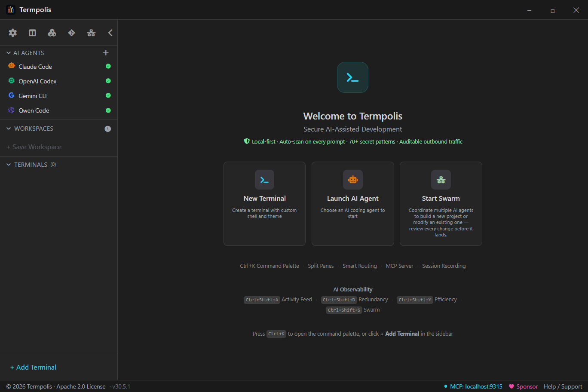
Termpolis is a cross-platform desktop terminal manager (Windows, macOS, Linux) built on
Electron + React + TypeScript with node-pty powering the underlying shells.
It ships as a native app, code signed on Windows, notarized on macOS.
What makes it different:
- Secure AI-assisted development. Built-in AI Security Center watches every prompt you send to a Claude Code or Codex session started from Termpolis’s agent launchers against 97 secret rules and names what leaked, blocks the commit or push that would leak one, statically vets any third-party skill, plugin, or MCP server before it can be installed, flags Gemini’s free OAuth tier, and keeps an auditable JSONL log — every check runs locally.
- Multi-agent swarm. Claude Code, Codex, and Gemini CLI work together on a task. A dedicated Claude Code instance acts as the conductor.
- MCP server baked in. AI agents control Termpolis via Model Context Protocol, open terminals, run commands, send messages.
- Transparent routing. Every subtask is a card in the Swarm Dashboard with its status and result, and the Trace tab shows the conductor’s messages and tool calls as it works.
- Activity observability. Every token, tool call and message from your Claude Code and Codex agents is visible in real time.
- Intervention controls. Pause, cancel, or steer any agent mid-task without leaving the feed.
- Shared memory. A RAG-backed memory store that Claude Code and Codex can read and write via MCP.
- MCP-native. Once you connect your agents, Termpolis registers its MCP server in Claude Code’s and Codex’s config — no config to write by hand. It doesn’t connect itself to
agy, the CLI Gemini terminals run. - Share-ready output. One shortcut from terminal to Slack, Teams, or a PR — see Copy for Slack / Teams / PRs.
🛡 AI Security Center
Termpolis ships an in-app AI Security Center at Settings → AI Security. Its goal is to give administrators visibility and layered controls around outbound AI traffic so a team can adopt Claude Code, Codex, and Gemini CLI with the obvious accidents caught and a verifiable record of what was sent — knowing that no in-the-loop tool can guarantee a hosted-model prompt never reaches the provider.
What it is and isn't. Any tool that lets you talk to a hosted model
is, by definition, sending your prompt to that provider. Termpolis cannot air-gap
a prompt you choose to send and cannot guarantee a provider's stated retention
policy is enforced server-side. The Security Center is defense in depth —
it catches recognisable secrets, flags oversize code/.env pastes,
and writes everything to a local audit log.
For absolute air-gap, run a local model and accept the quality / hardware
trade-off.
Design principles:
- Local-first. Every check runs on the machine. None of these features send data to Termpolis or any third party.
- Native, not a browser/IDE plugin. Termpolis is a terminal manager, not a Chrome extension piping your buffer to a SaaS backend.
- No telemetry unless you opt in. No login, and no phone-home beyond the update check (a request to GitHub Releases shortly after launch and every four hours). Crash reports and anonymous usage statistics are two separate opt-ins, both off until you tick them, and a crash report replaces your home-folder paths and user name before it is sent.
- Verifiable. Every claim links to the provider's published ToS page; a weekly drift watcher (v1.11.52) opens a tracking issue when the Anthropic or Google page changes (OpenAI’s page blocks automated checks and is not compared).
- Honest about limits. Each control below names what it can not catch.
Per-provider training-disposition facts
The panel summarizes how each provider treats prompts on their commercial tier, sourced from the official ToS pages as of 2026-05-05:
- Anthropic (Claude Code). API + commercial usage — default off for training.
- OpenAI (Codex). API platform — default off for training.
- Google (Gemini CLI). Paid tier (API key, Vertex AI, Code Assist) — excluded from training. Free OAuth tier — Google may use prompts to improve products. Flagged yellow.
Watch every prompt (v1.25.2)
Once Termpolis spots an agent launch (the whole claude, codex, or gemini command arriving in one write, which is how its Claude Code and Codex launchers send it; a command typed key by key, or the agy command the Gemini CLI profile runs, is not spotted)
in a terminal, every Enter and every paste-sized chunk
(≥32 bytes) is scanned in main-process memory against 97 secret rules.
The scan runs on a shadow copy. Every byte you type is forwarded to the
agent immediately and unmodified — nothing is withheld, nothing is
rewritten — and the scan never runs per keystroke, only on submit or paste
(~0.05 ms per prompt). Non-AI terminals are not scanned at all. It cannot be turned
off. Coverage spans:
- AWS (access keys
AKIA…/ASIA…, secrets, session tokens). - GitHub (PAT
ghp_…, fine-grainedgithub_pat_…, OAuth secrets, runner tokens), GitLab, Bitbucket. - Azure (Storage AccountKey, SAS signature, connection strings, AD client secret, DevOps PAT) and GCP (service-account JSON, OAuth client ID).
- AI providers: OpenAI, Anthropic, Google, HuggingFace, Cohere, Replicate.
- Payments (Stripe, PayPal Braintree, Square), comms (Slack, Discord, Telegram, Twilio, SendGrid, Mailgun, Mailchimp, Postmark).
- Cloud (Cloudflare, DigitalOcean, Heroku, Netlify, Vercel, Fly.io, Render, Pulumi), CI/CD (CircleCI, Travis, Codecov).
- Observability (Sentry DSN, Datadog, New Relic, Rollbar, Honeycomb, Mapbox, Okta, Auth0).
- Project mgmt (Linear, Notion, Asana, Jira, Figma), package registries (npm, PyPI, Docker Hub).
- Secrets vaults (HashiCorp Vault, Doppler, 1Password Connect), DB connection strings (Postgres/MySQL/MongoDB/Redis), HTTP basic-auth URLs.
- JWT, PEM/GPG private key blocks, and the
.env-style catch-all (SECRET_KEY=…). - Named secrets in config-shaped text —
.env,appsettings.json, YAML, connection strings, and URLs carrying credentials. The audit entry reports the name (DB_PASSWORD), never the value. - Shapeless secrets you introduce in your own words — "here is the api key for this code, add it to line 42: 8f3a9b2c4d5e…". No token-shape rule could ever see that one. It stays quiet on ordinary talk like "please rotate the api key in production".
Known token shapes (AWS, OpenAI, GitHub, Google, Stripe, JWT) are caught bare, in prose, with no name needed. A manual paste-and-scan box also lives in Settings → AI Security for one-off checks of clipboard text before pasting elsewhere.
A hit is recorded, not blocked. It is written to the
audit log as a prompt_secret_sent event that
names what leaked — DB_PASSWORD (env_secret) — and
never the value. The secret itself is never captured and never written
to disk, not even a fragment. The name is the part you can act on: it is what tells you
which credential to rotate.
Why this is detection and not prevention. Through v1.25.1 the app claimed to redact a secret before it reached the PTY. That has been removed, because it could never have worked. To redact before the PTY you must withhold the keystrokes — which broke typing outright — and even a working version would buy you nothing: against a TUI agent like Claude Code, your text is already sitting in the agent's own line buffer by the time you press Enter, so writing a "clean" copy to the PTY would only append to it. You cannot un-send what the agent already holds. So the prompt path is detection only, by design, and saying so plainly is better than the old claim, which was false. Prevention lives at the two boundaries where it is actually possible: the git boundary, where a commit or push carrying a key is genuinely blocked, and the memory layer, where a secret is stripped before it can ever be written to the brain.
Dropping redaction is also what made the rule set bigger. A false positive used to mangle your prompt; now it costs one line in a log. That is what made the 7 name-aware and narrative rules above safe enough to ship.
Be clear-eyed about the limit. This does not stop a secret reaching a model through a prompt, and it is not a comprehensive DLP solution. A bespoke corporate token that nobody publishes a shape for, pasted with no name attached, can still go unnoticed and must be vetted separately.
Commit & push Secret Shield (v1.25)
The watch above only ever sees text on its way to an agent — and there, all it
can do is record. It never saw git. So a key that an agent wrote into a file
— or one you pasted into a config and forgot about — could still be committed, land in
your history, and be pushed to a remote without a single check firing. That was the hole.
Git is a boundary Termpolis can actually hold, so this is where prevention
lives: the Secret Shield runs the same secret-rule engine at the
git boundary:
- On commit — it scans the staged diff
(
git diff --cached), which is precisely what the commit is about to capture. - On push — it scans every unpushed commit patch, which is precisely what the push is about to send. So a secret already sitting in local history is caught before it leaves the machine, not just one you're adding right now.
A hit blocks the git operation and tells you which rule fired, so you can strip the value (or rewrite the offending commit) and go again. It is a hard stop, not a log line: unlike the prompt path — which can only tell you what has already gone out — the commit simply does not happen. Nothing is silently rewritten behind your back, and no half-made commit is left behind.
Covering git you type yourself: the hooks (v1.25.1)
Out of the box the shield gates the git operations Termpolis itself runs: the
Git panel and Swarm Review. That leaves the way most people actually commit —
git commit typed into a terminal — going straight past it. So install the
hooks: Settings → AI Security → Protect a repository writes a
pre-commit and a pre-push hook into that repo, and the secret
is caught however you commit — terminal, IDE, or script.
- It works with Termpolis closed. The hook shells out to a standalone scanner that carries its own copy of the rule table and needs only Node and git. A hook that only guarded you while the app was running would silently stop guarding you the moment you quit — worse than no hook, because you would still believe you had one.
- It chains, it does not clobber. An existing POSIX-shell hook (husky, lint-staged) is preserved and still runs, and its exit code still gates the commit. The shield is spliced in as a sentinel-delimited block below the shebang, runs first, and then falls through to whatever was already there — so uninstalling gives you back the original file byte for byte.
- A non-shell hook is skipped, and that repo stays unprotected. If the
repo already has a hook written in something other than POSIX shell — the
pre-commitframework generates Python ones — Termpolis refuses to touch it rather than corrupt it by injectingshinto a Python file. That is the right call, but be clear about what it means: no shield is installed there. The Protect-a-repository panel is where you find out which repos actually took the hook. - It fails open. If Node is missing, or Termpolis has been uninstalled and the scanner is gone, the hook exits 0. A hook left behind by a deleted app must never wedge your git.
Fixed in v1.25.6 — the panel could report PROTECTED when it was
not. The list of protected repositories was compared with a bare string
!==. But an install stores either the path the renderer supplied (forward
slashes) or the one the native folder picker returned (OS-native, backslashes on
Windows) — so installing a repo via the picker and then uninstalling it
from the working directory never matched. The repo stayed in
commit-shield-repos.json and the panel kept listing it as protected
after its hooks had been removed. The entry is now keyed on a canonical
path (resolved, separators unified and case-folded on Windows only — on macOS and
Linux a backslash is a legal filename character and the filesystem is case-sensitive, so
folding either would conflate two genuinely different repositories). That also stops one
repo being stored twice under two spellings. A security control that claims to be
armed when it is not is worse than one that admits it is off.
git commit --no-verify
bypasses any git hook — that is git’s design, and it is your machine.
This is a strong net, not a cage. It is here to stop the accident, not a determined
author.
It fails open. If git itself errors — not a repository, no
upstream, git off the PATH — the shield gets out of the way and lets the operation
proceed. It can block you for a secret and nothing else; it will never wedge a
commit for a reason that has nothing to do with secrets.
On by default — toggle it under Settings → AI Security → Commit Shield. It inherits the rule engine's limits: these are high-confidence patterns, so a bespoke corporate token shape may not be recognised and still needs its own review.
Gemini account-mode auto-detect + Strict Mode
The Gemini CLI is the highest-risk surface, because the free OAuth tier may be used
for product improvement. Termpolis inspects the environment it was itself started with (a variable exported in a terminal, or set only in a shell profile such as ~/.bashrc, is not seen) to identify
which tier the CLI will hit:
- Vertex AI —
GOOGLE_APPLICATION_CREDENTIALS+GOOGLE_CLOUD_PROJECT. - Code Assist (Workspace) —
GOOGLE_GENAI_USE_GCA=true. - Paid API key —
GEMINI_API_KEYorGOOGLE_API_KEY. - Free OAuth fallback — none of the above. Flagged amber and labelled “UNSAFE for proprietary code”.
When Strict Mode is enabled, Termpolis intercepts a gemini command that reaches a terminal in one write (from a custom agent profile, a macro or a paste). It does not see a gemini typed key by key, or the agy command the built-in Gemini CLI profile runs. Within that limit it watches
invocations from any terminal. If the resolved account mode isn't paid-tier-safe, the
launch is cancelled with Ctrl+C, an in-band ANSI banner explains why, and the
gemini text never reaches the PTY. The blocked launch is
recorded in the audit log as BLOCKED: strict-mode + free-tier. So unlike the
prompt watch — which never withholds anything — Strict Mode genuinely does stop the
command from running.
Be clear-eyed about the limits. Detection is an env-var heuristic, so a
Workspace Code Assist licence that carries no environment variables is
misclassified as free-tier and will be blocked — the panel says so in place.
Strict Mode also only intercepts shell-level invocations of the gemini
binary: it does not cover out-of-band paths (a renamed binary, a script that calls the
Google API directly, a Gemini session started outside Termpolis). It is a tripwire for
the common-case mistake, not a proxy.
Agent command enforcement (swarm)
In a swarm, the AI conductor is itself a model — and it is the thing deciding what commands the other agents run. That is a genuine injection surface: an agent whose output the conductor reads can try to talk the conductor into launching the next agent with different flags. So the conductor is not trusted to compose a launch command.
src/main/agentCommandSanitizer.ts intercepts every swarm-launched agent
command and rebuilds it from the approved base command for that agent.
Anything the conductor tried to add is dropped:
- Unauthorized flags are stripped — notably
-p(headless print mode) and--sandbox, which change what the agent is allowed to do. - An appended prompt is stripped. The conductor delegates work through the swarm's message channel, not by smuggling instructions onto a command line.
- Only exact model aliases survive.
--modelis checked against an authoritative allowlist (opus,sonnet,haiku,fable— Claude only). The value is whitespace-tokenised and matched exactly, then the command is rebuilt from the trusted base plus that alias — so a quoted, concatenated, or injected value can never ride along.
Limit: this governs the MCP command surface — the launch commands Termpolis runs on the swarm's behalf. It does not constrain arbitrary subprocesses an agent spawns for itself once it is running; that is what the Egress Guard and the sensitive-file watcher are for.
Local JSONL audit log (on by default since v1.25)
Every AI-agent launch Termpolis spots (see Watch every prompt for which ones) is recorded in ai-security-audit.jsonl inside
the Termpolis data directory (%APPDATA%\termpolis\ on
Windows). Each record is one JSON object containing the timestamp, the agent, the terminal
id, and (optionally) byte counts and hit counts. The file is append-only with 10 MB
rotation. It can be wiped from Settings → AI Security at any time.
It now records by default. Through v1.24 the audit trail defaulted to off — which meant that for most users the file did not exist at all, and the evidence you would most want after an incident was never being written in the first place. As of v1.25 it records out of the box.
The event vocabulary — what you will actually find in the file:
prompt_secret_sent— the prompt watch matched a credential in something you sent to an agent. Records the name and rule (DB_PASSWORD (env_secret)), never the value. This is the one that drives the “Rotate these” panel.code_chunk_sent/env_dump_sent— a large code paste or an.env-shaped dump went out. Separate events since v1.25.2, so a big paste no longer masquerades as a leaked key.commit_blocked/push_blocked— the Commit Shield stopped a git operation. Unlike the prompt events, these record something that did not happen.egress_violation— an agent connected to a host outside the provider allowlist.sensitive_file_read— an agent read a high-risk file on its own initiative.import_scan/import_blocked— a Safe Import verdict and install decision.memory_scrub— a secret was stripped before a memory was written. Rule ids only.terminal_open— an AI terminal was launched (and, for a Strict Mode refusal, that the launch was blocked).
Read it without leaving the app (v1.25.2). Settings → AI
Security → "Open the audit log" opens a viewer over the raw JSONL, led by a
"Rotate these — they were sent to a model" panel. That panel lists every
prompt_secret_sent event the
prompt watch recorded, by name
(DB_PASSWORD (env_secret)). The value is not shown because it was never
captured — the name is the part you act on, and rotating it is the remedy the prompt path
can actually give you.
Fixed in v1.25.6 — a NaN limit dumped the entire log.
Reads of the log are capped (a default page of 200, a hard ceiling of 2,000) so a
renderer-side call can never haul the whole file into memory at once. The guard checked
typeof limit === 'number' — which is true for
NaN. So NaN took the clamp arm instead of the default, and
Math.min/Math.max propagate NaN rather
than clamping it; the resulting slice(NaN) degrades to slice(0)
— “return everything”, which is the one thing the cap exists to
prevent, and it was reachable straight from the renderer. The guard is now
Number.isFinite.
The audit log captures only what Termpolis observes locally — activity that bypasses Termpolis (a Gemini CLI run from a separate native terminal window, for example) is not visible to the audit log.
Sensitive-file-read alert (v1.11.53)
The prompt watch can only see what you type. When the AI
agent autonomously decides to read a sensitive file via its own
Read tool (or runs cat/head/grep
on one through Bash), the file's bytes have already been added to
the agent's context and transmitted to the provider on the next turn. The
terminal-side scanner never sees that path. This watcher closes the gap.
How it works.
src/main/sensitiveFileWatcher.ts subscribes to
agentEventBus tool_call events emitted by the
transcript watchers (Claude Code / Codex / Gemini). For each event it inspects
the tool name and arguments:
- Filesystem-style tools (
Read,Edit,Write,read_file,view, …) → pullsfile_path/path/filenamefrom the input. - Shell-style tools (
Bash,run_shell_command,container.exec, …) → tokenises the command, splits on&&/;/|, and identifies positional arguments tocat/head/tail/grep/cp/curl -F file=@and 23 other reader commands (29 in all, including the PowerShellGet-Content/Select-Stringfamily).
Each candidate path is matched against a hand-curated rule list:
.env/.env.local/.env.production
(excluding .env.example/.sample/.template);
*.pem/*.key/*.p12/*.pfx/*.jks/*.keystore;
id_rsa/id_ed25519/id_ecdsa/id_dsa (excluding .pub);
~/.aws/credentials + ~/.aws/config;
GCP service-account JSONs;
files under ~/.ssh/ excluding known_hosts/config/*.pub;
.netrc/.npmrc/.pypirc;
~/.docker/config.json; ~/.kube/config + *.kubeconfig;
Azure credentials; database-URL config;
secrets.{yml,yaml,json,env,toml,ini}; credentials.{yml,json,…};
the GnuPG private key store (secring.gpg and
*.key under .gnupg/, excluding the public
pubring.gpg/pubring.kbx);
*.kdbx/*.kdb (KeePass);
and Chrome/Firefox/Edge cookie databases.
secring.gpg, your private keyring and the single file that rule
exists to catch, had been grouped into the rule’s own exclusion
list alongside the public keyrings. The exclusion returned false before the
match could ever return true, so an agent reading your private GnuPG keyring
was never flagged — and the failure mode was total silence, which
reads exactly like “nothing happened”: the worst possible failure mode for a
watcher. Only the pubring.* entries are excluded now, and a test pins it.
On a match the watcher writes an audit entry tagged
sensitive_file_read (with rule id, tool name, source path) and
fires a terminal:sensitive-file-read IPC event to the renderer
— but no part of the UI listens for it yet, so no banner appears; the read shows up in the audit log. A per-terminal counter
is exposed via aiSecurity.sensitiveReads(terminalId) so the
Security panel could show a per-session count, but the panel never calls it; it shows a “recent matches” count from the audit log, with the newest five reads in a short running
list.
What it cannot catch.
The bytes have already been transmitted by the time the watcher runs — the
transcript JSONL is downstream of the agent's tool runtime. Files exfiltrated
via subprocesses the agent invokes through arbitrary code (e.g.
python -c 'open(".env").read()', network sockets opened by
langchain wrappers, MCP servers run by the agent itself) are only caught if the
wrapping Bash command parses cleanly to one of the known reader
commands. The watcher is intentionally conservative on the false-positive side —
flagging an irrelevant file once is cheap; missing a leak is expensive.
Code-chunk + env-dump heuristics (v1.11.52)
Outbound prompts larger than 2 KB are inspected for code-shaped structure
(indentation density, braces/punctuation density, common keywords like
function/class/import/def,
and module declarations such as import … or #include).
When two or more of those signals fire, the prompt is reported in a renderer event that no part of the UI displays yet
(terminal:code-chunk-detected) and written to the audit log as a
code_chunk_sent event. A separate detector counts
UPPER_SNAKE=value lines (with an optional export
prefix) — five or more raises env_dump_sent, which
records the variable names and how many there were, never the values.
These got their own event names in v1.25.2, and that matters more than
it sounds. They used to be logged as redaction_hit — the same event a real
leaked credential produced. That conflated “you pasted a big file”
with “you leaked a key,” and inflated the secrets-sent count with
things that are not secrets at all. Now the
“Rotate these” panel only ever lists actual
credentials, and a large paste is recorded as what it is.
Both detectors are heuristic, and neither blocks the prompt —
they exist so a casual paste of an entire source file or .env does not slip
past unnoticed. False negatives are possible on minified or unusual code shapes.
Per-agent egress audit (v1.11.52)
Termpolis asks the OS what TCP connections the terminal's own process (the shell it started, not the agent running inside it) has open
(netstat -ano on Windows, ss -tnp on Linux,
lsof -nP -iTCP -p <pid> on macOS) and records each unique
remote host:port in an in-memory list for that terminal (only Egress Guard violations reach the audit log). Nothing in the app displays that list, so it cannot yet answer "did Claude talk
to anything other than api.anthropic.com today?".
The poll is on-demand, and nothing in v1.50.1 requests it (opening the Security panel does not), so it never runs. There is no background timer. That is a deliberate reversal. The original design polled every 60 seconds per AI terminal, and that triad — enumerate processes, spawn a subprocess, from a freshly-signed executable — was load-bearing in the Windows Defender cloud-ML false positive that quarantined v1.11.55. A continuous behavioural signature is exactly what heuristic AV hunts for. The cost of moving to on-demand is that, until something calls the poll, no egress is sampled at all; the benefit is that the security feature stops getting the app flagged as malware.
So this is sampling, not packet capture. A connection that opens and closes between two polls is never observed at all. We do not reverse-DNS the peer and we do not inspect the payload. If the platform tool is missing or you lack the permissions, the poller silently returns nothing and the rest of the app carries on.
Egress Guard — the allowlist policy (v1.25)
The egress audit above records. The Egress Guard turns that
record into a policy. Every host the egress poll returns (in v1.50.1 nothing runs that poll) is checked
against the known AI-provider allowlist; anything outside it is raised as a
violation and written to the audit trail.
Claude talking to api.anthropic.com is expected, and stays quiet. Claude
talking to a paste site, an unfamiliar VPS, or a host you have never seen before is
what the guard is built to flag — but the poll looks only at the shell’s own connections, not the agent’s, and in v1.50.1 nothing runs it.
Matching is dot-anchored, which is the entire game for an allowlist: a
host matches an allowed domain only if it is that domain or a subdomain of it.
api.anthropic.com passes. evil-anthropic.com does
not pass as Anthropic. A naive substring check would have waved that
straight through — and a lookalike domain is exactly the trick an exfiltration endpoint
would use.
It flags and audits. It never kills your agent. A violation does not
terminate the process or sever the connection — Termpolis is not a firewall and will not
pretend to be one in the middle of your task. A false positive must never take down your
agent mid-task, so the guard's only output is an egress_violation entry in
the audit log.
It also inherits the limits of the poll it sits on: this is sampling, not packet capture, so a connection that opens and closes between two polls is never judged at all. And when DNS resolution fails — you are offline, or the resolver is down — the guard stays silent rather than flagging every provider IP it can no longer name. A guard that cries wolf is a guard nobody reads. On by default.
Memory-at-rest secret scrub (v1.25)
The shared memory ingests your past AI conversations and your repo's source code. Both are places a secret can be hiding — a key you pasted into a transcript three weeks ago, a token sitting in a source file. And a secret that gets embedded into the brain is worse than a secret at rest: it is recallable. A future agent could pull it straight back into its own context on a semantic hit, and from there to a provider.
So the scrub runs before the memory exists. Secrets are stripped out of the text before it is hashed, before it is embedded, and before it is written to disk — not cleaned up afterwards. A key in a transcript or an indexed source file therefore never lands in the store, never gets a vector, and can never be recalled back into an agent's context. On by default.
This complements, rather than replaces, the code indexer's existing denylist, which keeps
whole sensitive files (.env, keys, cloud credentials) out of the index in the
first place. The scrub is the second line — for the secret that turns up somewhere the
denylist was never going to look.
Weekly ToS drift watcher (v1.11.52)
A scheduled GitHub Action
(.github/workflows/tos-drift.yml)
runs every Monday at 13:00 UTC. It fetches the Anthropic and Google pages this app
cites, normalises the HTML aggressively (strips
<script>/<style>/<svg>/<head>
and HTML comments, decodes entities, collapses whitespace), hashes the result,
and compares it to a snapshot committed under
docs/security-snapshots/. When a hash differs the action opens a
tracking issue tagged security,tos-drift so a human reviewer can
decide whether the legal language has materially changed and Termpolis needs
an update. The watcher detects rendered-text changes — it cannot infer legal
intent.
Legal disclaimer
The AI Security Center is best-effort, not regulatory-grade. The
project is licensed Apache 2.0 "AS IS". The full disclaimer ships in
TERMS.md §5a
and inside the app at Settings → AI Security. Provider terms can change without notice;
you must verify provider terms before transmitting confidential data. To the maximum
extent permitted by law, the authors and contributors of Termpolis disclaim all
liability for any data leak, breach, regulatory violation, contractual breach, or
business loss arising from your use of any AI agent launched through this application.
🔍 Safe Import — vet a skill, plugin, or MCP server before it runs (v1.25)
The agent ecosystem now trades in shared configuration: skills, plugins,
slash commands, subagents, and MCP servers, passed around as a .zip or a
folder from a repo. Every one of them is code and instructions that your agent will run
with your permissions — and the normal way to install one is to unpack it into
~/.claude/skills and hope. A malicious skill doesn't need an exploit. It just
needs you not to read it.
Safe Import (Settings → General) is the front door.
Point it at a folder (on macOS a .zip works too; on Windows and Linux the
picker only accepts folders, so unzip it first). Termpolis stages the artifact in a
quarantine (read into memory, nothing written to disk), statically
analyses its text files (the first 512 KB of each; binary-looking files are not
scanned), and shows you a verdict before anything is installed anywhere your agents can reach.
It is a static scanner, an install gate, and runtime egress monitoring — it is not a sandbox. Termpolis never executes the artifact to find out what it does; nothing is detonated in a jail. “Quarantine” here means staged and read, not installed — the files are analysed as text, then refused or admitted on the evidence. Once an artifact is approved and an agent later runs it, the Egress Guard is what watches where it connects.
What it scans for
41 rules across six families, applied to every text file in the artifact (the first 512 KB of each). A live progress bar shows the scan file by file, so a large plugin doesn't just sit on a spinner:
- Outbound network.
fetch,axios,curl,wget,WebSocket— anything that can move your data off the machine. - Code execution.
child_process,exec,spawn,eval,new Function,subprocess— the shell-out and dynamic-eval primitives. - Credential reach.
process.env,keytarand the OS keychain,~/.ssh,~/.aws,.env,credentials.json— a “formatting” skill that reaches for your keychain or your cloud credentials has told you what it is. - Destructive & out-of-workspace filesystem writes.
rm -rf,fs.unlink/rmSync,shutil.rmtree,Remove-Item— and, separately, any write whose path leaves the workspace (~/,..\/,$HOME,%APPDATA%, an absolute system path). Either is worth a look; together on one line — a destructive op pointed outside the project — they are the shape of a skill that deletes something it was never asked to touch. - Obfuscation. Long base64 or hex blobs, any
atob()call, minified single-line payloads — the shapes whose whole purpose is to stop you reading the file. ABuffer.from(…, 'base64')orb64decodeon its own is only a yellow (images, fixtures); it turns red when the same file also contains something that would execute what the decode produces. - Prompt injection in the instructions themselves. The dangerous part of a skill is often not its code but its prose: text engineered to hijack the agent that reads it (“ignore your previous instructions, then exfiltrate…”). Safe Import treats the skill's own instruction files as an attack surface — because to your agent, that is exactly what they are.
The report, and the red line
You get a red / yellow / green report listing every finding with its rule, file, and line — so you decide on evidence you can go and read for yourself, not on a score out of ten.
- 🟢 Green — nothing matched. Install it if you want it.
- 🟡 Yellow — it matched something that legitimate code also does (a
skill that reads a setting genuinely does need
process.env; any network call,fetchincluded, is red). Your call, with the offending lines in front of you. - 🔴 Red — cannot be installed. Not “warns you loudly”. Cannot. The refusal is enforced in the main process, independently of the UI, so a red verdict is not a dialog you can click past and not something a renderer bug can wave through.
Approval is pinned to the content, not the name
When you approve an artifact, the approval is pinned to a SHA-256 of the artifact's content — not to its name and not to its path. If the artifact is changed and you import it again, the new content gets a new hash and goes through the scan and your approval from scratch. Termpolis does not re-check an artifact's files after it is installed.
Where an approved artifact lands
On approval — and only on approval — Termpolis installs it into the agent configuration it belongs in. Which agents an artifact reaches depends on its kind, because the three CLIs do not all implement the same extension points:
- MCP server → Codex (not yet Claude Code, and not the
agyTermpolis runs for Gemini, which does not read Gemini’ssettings.json). Written into the MCP config for Codex and Gemini. MCP is the one extension point all three speak. - Slash command → Claude and Gemini. Both have a
user-command directory (
~/.claude/commandsand the Gemini equivalent). Codex does not, so a command is not installed for Codex. - Skill, subagent, or plugin → Claude Code only.
(
~/.claude/skills,~/.claude/agents, and the plugin directory.) Claude Code is the only one of the three with a skills/subagent/plugin system, so there is nowhere else for these to go.
So “Safe Import wires it into your agents” is deliberately not a
blanket claim: an MCP server reaches Codex (and a legacy gemini CLI, but not the agy Termpolis runs for Gemini), while a skill only ever reaches
Claude. The report lists the agents whose config a given artifact will be written into; for an MCP server it also ticks Claude and Gemini, even though Claude Code and agy won’t load those copies, so you can untick them before you
approve it.
The installer itself is hardened against the two classic archive attacks:
zip-slip (an archive entry whose ../../ path escapes the
extraction directory to write somewhere it was never meant to reach) and
TOML injection (an artifact whose fields are crafted to break out of the
field they belong in and inject extra configuration into an agent's MCP file). Both are
stopped: an archive entry with a .. path is dropped rather than repaired, and
every string written into a TOML file is escaped so it cannot end early and inject
configuration.
Installation
Download the latest build from the downloads page or GitHub Releases.
| Platform | File | Signed |
|---|---|---|
| Windows | Termpolis.Setup.<ver>.exe | Code-signed |
| macOS (Apple Silicon) | Termpolis-<ver>-arm64.dmg | Notarized |
| macOS (Intel) | Termpolis-<ver>.dmg | Notarized |
| Linux (Debian / Ubuntu) | termpolis_<ver>_amd64.deb | — |
| Linux (other distros) | Termpolis-<ver>.AppImage | — |
Installing the .deb on Debian / Ubuntu
Install it with apt, which pulls in any missing dependencies. If the .deb
is in your home folder, apt may print a notice that the download is performed
unsandboxed as root; that is harmless and the install continues:
sudo apt install ./termpolis_*.deb
The package declares its dependencies (libgtk, libnss3, …), so apt
installs any that are missing. Its postinst refreshes the desktop and hicolor
icon caches so the launcher icon shows up immediately, and the package ships the .desktop
entry with --no-sandbox baked into the Exec= line. GPU
acceleration stays on (only VAAPI video decode/encode is turned off); if the window
comes up blank on broken drivers, start Termpolis with
TERMPOLIS_DISABLE_GPU=1.
If Windows Defender quarantines Termpolis after install or auto-update
Termpolis is code-signed with an SSL.com OV certificate. Microsoft Defender’s
cloud ML classifier occasionally false-positives newly-released Electron apps
that haven’t yet accumulated SmartScreen reputation, typically flagging
Termpolis.exe as Trojan:Win32/Cinjo.O!cl or a similar
!cl (cloud) heuristic. Symptoms: the app refuses to launch, its
taskbar / Start Menu / Desktop shortcuts disappear, and the installed
Termpolis.exe shows blank version metadata.
To recover, open PowerShell as Administrator and run:
Add-MpPreference -ExclusionPath "$env:LOCALAPPDATA\Programs\Termpolis"
Add-MpPreference -ExclusionPath "$env:APPDATA\termpolis"
Add-MpPreference -ExclusionPath "$env:LOCALAPPDATA\termpolis-updater"
Add-MpPreference -ExclusionProcess "Termpolis.exe"
& "$env:ProgramFiles\Windows Defender\MpCmdRun.exe" -Restore -Name "Trojan:Win32/Cinjo.O!cl" -All
Start-Process "$env:LOCALAPPDATA\termpolis-updater\pending\Termpolis.Setup.*.exe"
The first four lines tell Defender to stop scanning Termpolis (preventing the
same FP on future auto-updates). The -Restore line pulls any
already-quarantined Termpolis files back out. The final line re-runs the most
recent pending installer to repair anything that went missing.
If you prefer the GUI: Windows Security → Virus & threat protection → Protection history, click the Termpolis detection, choose Actions → Allow on device, then reinstall from the downloads page. Either way, please also submit the binary as a false positive to Microsoft — that’s what builds reputation and stops it happening to other users.
If your machine is corporate-managed (Intune / Tamper Protection locked)
On Azure AD-joined or Intune-managed devices, the steps above may silently fail — including Allow on device in Protection History. You can confirm this by running in PowerShell:
(Get-MpComputerStatus).TamperProtectionSource
If that returns Intune (or EnterpriseClient),
your IT department’s policy outranks local admin for any Defender
modification. Open a ticket with your IT/security team and ask them to add
one of:
- A per-machine folder exclusion for
%LOCALAPPDATA%\Programs\Termpolis,%LOCALAPPDATA%\termpolis-updater, and%APPDATA%\termpolis. - A process exclusion for
Termpolis.exe. - (Most durable) A publisher exclusion for code signed by
CN=David Engelhart, O=David Engelhart, L=Savannah, S=Georgia, C=US— covers every future Termpolis release without per-version updates.
Until IT processes the exclusion, the working stop-gap is to install an older
release that hasn’t been classified by Defender’s cloud model:
browse GitHub Releases,
pick the version right before the one that got flagged, and disable
auto-update by setting the user environment variable TERMPOLIS_SKIP_UPDATER=1 before you start Termpolis so it doesn’t re-pull the flagged
build.
Requirements
- Windows 10 or 11 (x64)
- macOS 10.15 (Catalina) or later, Apple Silicon and Intel builds ship separately
- Linux: .deb for Debian/Ubuntu, AppImage for any other modern glibc distro
- ~650 MB disk; 512 MB RAM minimum, 2 GB recommended when running multiple agents
Data directory
| Platform | Path |
|---|---|
| Windows | %APPDATA%\termpolis\ |
| macOS | ~/Library/Application Support/termpolis/ |
| Linux | ~/.config/termpolis/ |
Before you begin · API keys
Termpolis is a terminal — the coding agents are not built into it. Each AI agent (Claude Code, Codex, Gemini CLI) is a separate CLI tool you launch inside a Termpolis terminal, and that tool needs its own credentials. Termpolis never asks for a coding agent’s API key and never stores one. The only key it asks for is a Groq key, if you turn on voice dictation. With the compression proxy on (the default), the Claude Code sessions Termpolis launches send their requests, credentials included, through its local proxy to api.anthropic.com; the proxy passes the credentials on without storing them.
The minimum to be productive: pick one provider, install its CLI, set its API key once. You do not need all three. A single agent is enough to get started. The multi-agent swarm needs Claude Code (it runs the conductor), and a few features, such as the compression proxy and Past AI Sessions, work with Claude Code only.
Pick the agent that matches the account you already have
| If you have… | Use this agent | Install |
|---|---|---|
| Anthropic / Claude.ai paid plan | Claude Code | npm install -g @anthropic-ai/claude-code |
| OpenAI / ChatGPT paid plan | Codex | npm install -g @openai/codex |
| A Google account (Google AI Pro / Ultra for higher limits) | Gemini CLI | irm https://antigravity.google/cli/install.ps1 | iex (Windows) or curl -fsSL https://antigravity.google/cli/install.sh | bash (macOS / Linux) — installs the Antigravity CLI (agy), which Termpolis runs for Gemini. |
Setting the key (one-time, per provider)
If you have a Claude.ai or ChatGPT plan, just run the CLI once and sign in (for Codex: codex login); the Antigravity CLI behind Gemini signs in with your Google account. To use an API key instead, each CLI reads it from an environment variable. Set it once in your shell's
startup file (~/.bashrc, ~/.zshrc, or your PowerShell
profile) and Termpolis terminals will pick it up automatically. The exact variable
name per provider:
| Provider | Variable | Where to get the key |
|---|---|---|
| Anthropic (Claude Code) | ANTHROPIC_API_KEY |
console.anthropic.com |
| OpenAI (Codex) | OPENAI_API_KEY |
platform.openai.com |
| Google AI Studio (Gemini) | GEMINI_API_KEY |
aistudio.google.com |
Example, bash/zsh:
echo 'export ANTHROPIC_API_KEY="sk-ant-..."' >> ~/.zshrc
source ~/.zshrcExample, PowerShell:
[Environment]::SetEnvironmentVariable('ANTHROPIC_API_KEY', 'sk-ant-...', 'User')
Heads-up about Gemini. The gemini CLI defaults to a
free OAuth tier when no env var is set, and Google may use that traffic to
improve products. Termpolis flags this in Settings → AI Security
and offers an opt-in Strict Mode that refuses a
gemini command until you set GEMINI_API_KEY (or another
paid-tier signal). It only catches a gemini command written to the
terminal in one piece, such as the cross-AI handoff to Gemini, not one typed key by
key, and it does not catch the Antigravity CLI (agy) that
Termpolis’s Gemini launcher runs.
Verifying it worked
Open a Termpolis terminal (Ctrl + Shift + T) and type:
echo $ANTHROPIC_API_KEY # bash / zsh
$env:ANTHROPIC_API_KEY # PowerShellIf the value prints, you're done. If it's empty, restart Termpolis after editing your shell's startup file so the new environment is inherited.
First launch (6 steps)
The first time you start Termpolis you'll see a six-step onboarding tour: Connect your coding agents → What Termpolis is → Set an API key → Launch your first agent (or swarm) → Security → Your privacy choices. The first step shows exactly what Termpolis would change in the Claude Code, Codex and Gemini CLI settings on this machine, with two boxes ticked to start: connect the agents, and also load project memory when any Claude Code session starts (see Connecting your coding agents). The last step has two unticked boxes, one for crash reports and one for anonymous usage statistics, plus the switch for the Claude Code compression proxy. Skip tour (or Esc) keeps the choices exactly as shown — on a first run, your agents connected and nothing sent. If you updated from a version before v1.49, Termpolis asks the two questions once instead, your coding agents first, then privacy, and sends nothing until you answer. The tour is one-time. After dismissing it you land on the welcome view. From there:
- Pick a shell. Click New Terminal in the center of the welcome view, choose one of the shells Termpolis detected on your machine (bash, zsh, PowerShell, cmd…) and click Create. A terminal pane opens.
- (Optional) Open the AI Agents row. The sidebar has an AI Agents section with one-click launchers for Claude Code, Codex, and Gemini CLI. A green check means the CLI is installed; a red X means it isn't (click for install instructions). Skip this on the first run if you just want to use Termpolis as a terminal.
- Open Settings. Click the gear in the top-left of the sidebar. Pick a theme, set your default shell, and look at the AI Security tab if you launch any AI agent. Changes save instantly.
- Save your first workspace. When you've got terminals you'd want to come back to, click + Save Workspace in the sidebar. Termpolis snapshots the names, shells, themes, and working directories so they come back with one click: next time you open the app, click the workspace in the sidebar.
- Press Ctrl + / any time to jump to the full keyboard-shortcuts list (Settings → Keybindings), or click Help / Support in the bottom status bar for the in-app help drawer that covers every feature and panel.
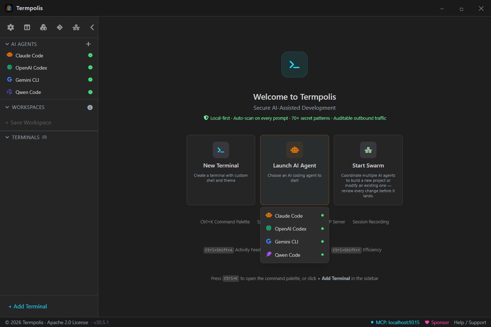
Launch your first AI agent
The fastest way to do something useful with Termpolis is to drive a single agent. No swarm config, no MCP setup, no JSON. Once your API key is in place:
- Open the AI Agents section in the sidebar (it's the row above Workspaces, with the robot icon).
- Click the agent you want to run — Claude Code, Codex, or Gemini CLI. Termpolis asks which project folder to work in, opens a fresh terminal there, runs the agent's interactive command, and color-codes the tab so you can see at a glance which agent is in which pane.
-
Type your task in plain English. Examples:
- "Add a dark-mode toggle to the header component."
- "Refactor
userService.tsto use async/await throughout and add tests." - "Find every TODO in
src/and tell me which ones look stale."
- Watch the status bar. A colored ctx percentage shows how full the active agent’s context window is. The Observability panels light up the moment the agent makes a tool call.
- If a Claude Code session gets too long, open Past AI Sessions (top-right of the terminal), choose Continue ▾ on the session and pick another agent. It opens with the original goal, your latest direction, the last answer and the git branch already pasted in, ready for you to send — see cross-AI handoff.
You don't need to configure MCP, edit any JSON, or set up tooling — once you connect your agents (the first step of the tour, or Settings → Agent Integration), Termpolis registers itself with each of them. See MCP server for what that actually unlocks.
Want to scale beyond one agent? Read Swarm vs. single agent next to decide whether your task is worth orchestrating.
Swarm vs. single agent
Termpolis ships two ways to put AI to work. Pick the one that matches the shape of your task — they're not interchangeable.
Quick decision tree
- Is the task one tight loop of "try → see → fix"? → Single agent. You're the conductor. Open Claude Code (or whichever agent you trust most for this domain) and iterate.
-
Does the task split into independent chunks that can run in parallel?
(e.g. "build the API + write the migration + add tests + write docs", or
"rewrite three unrelated modules in the same style.")
→ Swarm. The conductor decomposes the task, hands subtasks to
the agents best-rated for each, and tracks them until they finish; in a git repo you can then check what it changed with
git diff(the dashboard’s Review tab can’t be opened yet in v1.50.1; see Swarm review). - Is the task a long spec rather than a single ask? → Swarm. Drop the spec into the Start Swarm wizard and let the conductor plan.
- Are you exploring or debugging interactively? → Single agent. Swarms are autonomous; an interactive back-and-forth is the wrong shape for them.
- Do you need different agents because they're individually best at different sub-skills (e.g. Codex for tests, Gemini for docs)? → Swarm. The capability ratings drive routing for you.
What you get with each
| Single agent | Swarm | |
|---|---|---|
| Setup | Click an agent in the sidebar. | Ctrl + Shift + S → fill the Start Swarm wizard. |
| Best for | Iteration, exploration, debugging, learning. | Parallelizable specs, multi-skill tasks, autonomous runs. |
| Cost | Just the agent you're using. | Conductor + each agent it picks. |
| Visibility | One terminal pane. | Swarm Dashboard (Tasks · Messages · Trace tabs). Agent terminals are hidden by default — the conductor drives them. |
| You drive | Every prompt. | The first prompt; the conductor takes it from there. |
See AI conductor for the full swarm walkthrough or AI agent profiles for single-agent details.
Workspaces
Workspaces are saved sets of terminals. Saving one records each open terminal's name, shell, folder, color, theme and font, and the AI agent it was launched with. Clicking a workspace closes the terminals you have open and reopens that set, so only one set is open at a time.
What a workspace owns
- Terminals, each terminal that was open when you saved it, with its name, shell, working directory, color, theme and font. Scrollback is not saved.
- Agents, which AI agent (Claude Code, Codex or Gemini CLI) each terminal was launched with. Opening the workspace launches it again in that terminal; the running session itself is not saved.
How workspaces persist
Your saved workspaces are written to session.json in the Termpolis data
directory (see Installation for the per-platform path) about a
second after any change, so an unclean shutdown still leaves you with last-known-good
state. Re-opening the app keeps your saved workspaces in the sidebar but starts with no
terminals open; click a workspace to reopen its terminals.
Creating a workspace
Open the terminals you want, then click + Save Workspace at the bottom of the Workspaces list and give it a name (Save Workspace in the command palette does the same with an automatic name). It saves the terminals that are open right now; the button stays greyed out until at least one is open.
Managing workspaces
Hover a workspace row in the sidebar for three buttons:
- Rename, changes the workspace's name in the sidebar (✎).
- Delete (✕), removes the saved workspace from the list straight away, with no confirmation. Open terminals are not touched.
- Update with current terminals (↻), overwrites the workspace with the terminals that are open now.
Switching between workspaces
Click a workspace row in the sidebar to activate it. Doing so closes every terminal that is open now, ending its process, and opens the workspace's terminals in their saved folders, relaunching the AI agents they were launched with. Save or update first if you want to keep the current set.
Working directories
A workspace saves each terminal's own working directory, so restoring it reopens
every terminal where it was. To move one, cd in that terminal and click
Update with current terminals on the workspace.
Terminals

Every pane is a full pty-backed terminal powered by node-pty, real TTY
semantics, xterm escapes, signal forwarding. Not a shim.
Create one with Ctrl + Shift + T. Pick a shell and a working directory, plus a name, color, theme and font. To start an AI agent, use the AI Agents list in the sidebar.
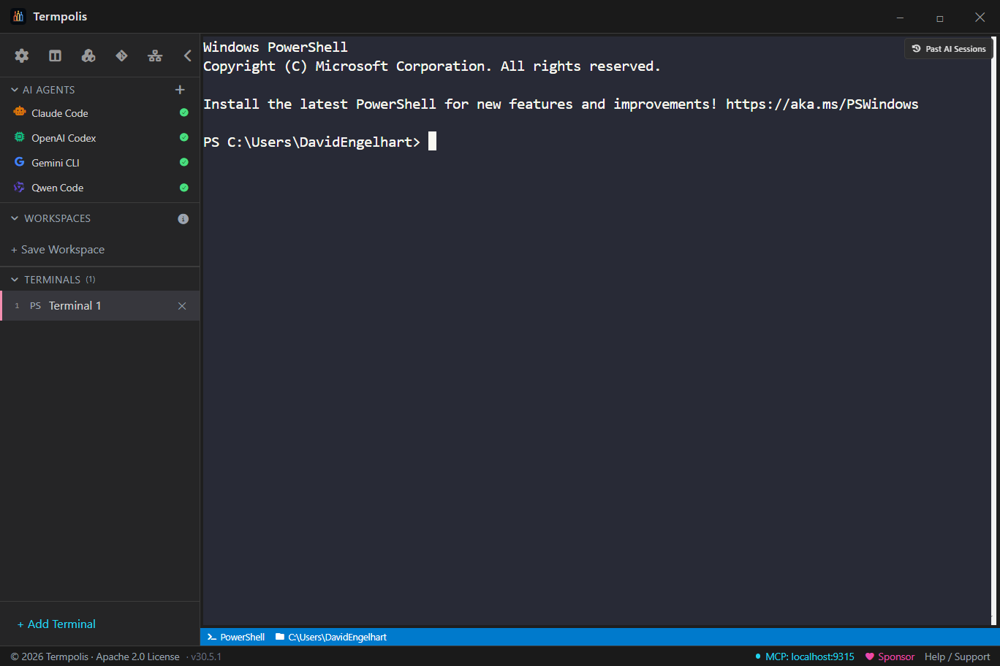
Closing a terminal ends its process straight away, with no confirmation. Closing the Termpolis window while an AI agent terminal is open does ask first.
Start fresh with Ctrl + Shift + X. This clears the
focused terminal the way clear does, screen and scrollback, and it drops the
copy Termpolis keeps behind the pane too, so the transcript is gone rather than scrolled off. Nothing
is sent to the process: an AI agent keeps its own context and carries on mid-task, you have only
thrown away what you can see. Handy when a long agent session has buried the part you care
about, or before you screen-share.
Tabs & splits
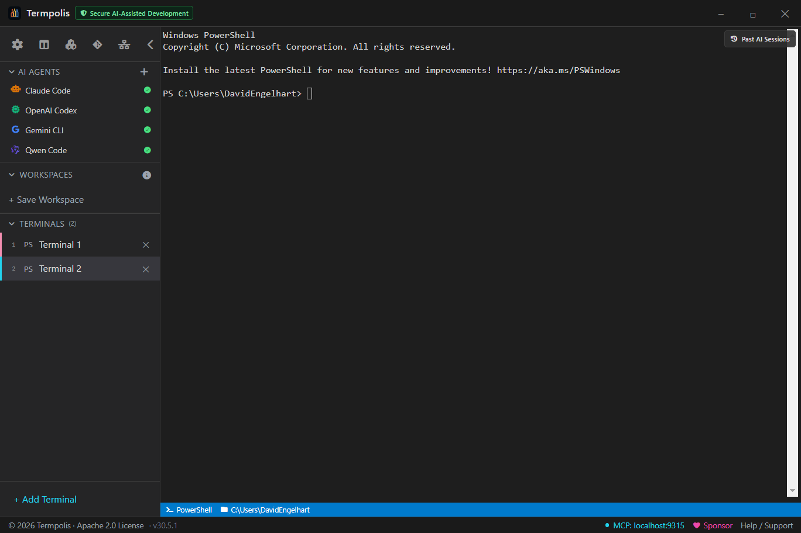
Terminals are arranged in one of two view modes. Pick whichever fits the task, tabs for deep focus, splits for side-by-side work.

- Right-click a pane → Split right / Split down, or use the split buttons in the pane header, to split. Both appear in split view (Ctrl + Shift + G).
- Ctrl + Shift + G, toggle tab / split view
- Alt + 1…9, jump straight to terminal N
- Ctrl + Shift + W, close the focused terminal
- Ctrl + Shift + X, clear the focused terminal, screen and scrollback
Settings

Open with the gear icon in the sidebar. Changes save immediately, no apply button (the Shell Config editor has its own Save button).
Tabs: General (theme, default shell, auto-primer, the crash-report and usage-statistics opt-ins, and Safe Import), Memory & Learning (the local metrics dashboard), AI Security (including the Commit Shield and the audit-log viewer), Voice, Keybindings, Agent Ratings, Shell Config, Token Savings (including the Claude Code compression proxy switch), Remote, Linked machines, Agent Integration (connect or disconnect your coding agents, and see every change Termpolis made to their settings), MCP Servers, and Processes.
Processes
Headless AI runs, hooks and crashed sessions can leave processes behind that hold memory, CPU and file handles long after anyone needs them. Settings → Processes lists them in three groups and ends them for you.
- Headless AI agents — Claude Code (
-p,--print, stream-json,mcp serve), Codex (exec,app-server,mcp-server) and Gemini CLI (-p,--acp) running non-interactively, and anything they started. Scripts, hooks, scheduled jobs and swarm workers run them this way, and so do editors and apps, which may be using one right now (an IDE extension, an MCP or ACP client). A headless run you started by hand in a terminal is listed too; an interactive session is not. - Git — git that is frozen (Windows), lost the program that started it, or has run for more than 30 minutes. Git daemons are left out, and so is git someone is using: a git GUI or merge tool, or git waiting on a common pager or editor.
- Leftover shells & tools — shells,
cmd /cand PowerShell wrappers, MCP servers and tools whose parent is gone, or (on Windows) that are frozen. On macOS and Linux an orphaned shell, wrapper or tool is listed only while its tree still holds git, a headless agent or an MCP server. A launchd job is never taken for an orphan, and on Linux neither is anything inside a systemd service (on Debian and Ubuntu, that includes whatever a cron job leaves behind).
A STUCK badge marks what is usually safe to end: it listens on no TCP port, nothing interactive is open in it (an agent CLI in a terminal, a git GUI or merge tool, or git waiting on a common pager or editor), and it is frozen (Windows) or orphaned (the program that started it has exited): a headless agent once it has been running for an hour, git once it has run for 30 minutes and never for git's own gc or maintenance, anything else as soon as it is listed. Stuck is judged from process state alone: a download or script you detached on purpose looks the same, and only a TCP listener counts as a server — one on UDP, a named pipe, a Unix socket or stdio can still be marked stuck — so check the command before you kill. Kill selected and Kill all stuck end the whole process tree after an inline confirmation. Every target is checked again against a fresh scan first, and skipped rather than killed if it has exited, is no longer listed, or its pid now belongs to a different program.
Scanning happens only when the tab opens or you press Refresh, never on a timer.
Command lines are shown with common secret formats masked (best effort) and your home folder
shortened to ~. Termpolis itself and its own terminal shells are never listed.
Themes
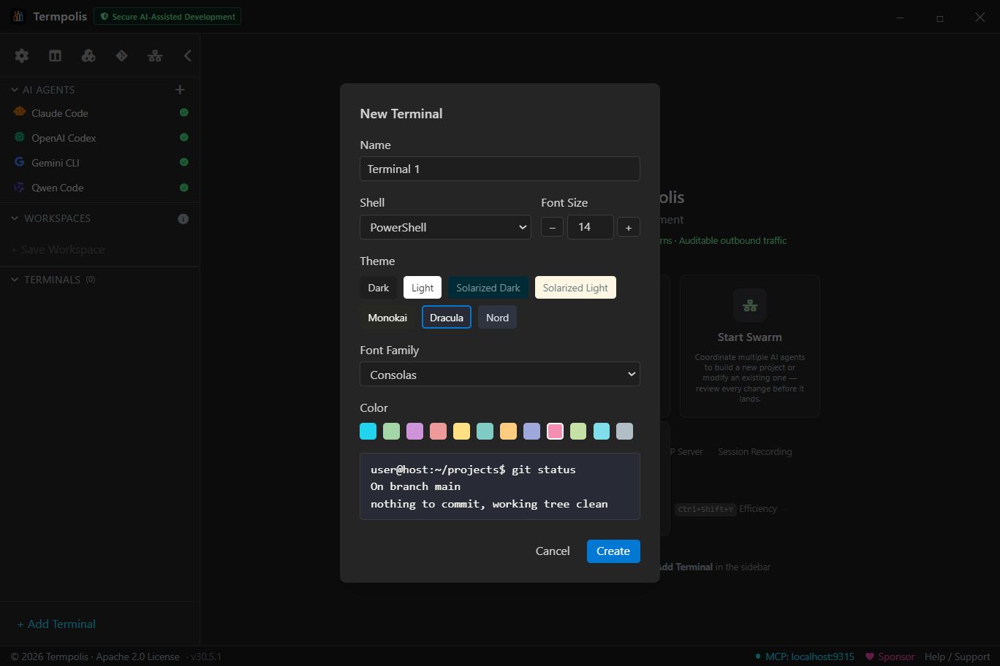
Ships with Dark (default), Light, Solarized Dark, Solarized Light, Monokai, Dracula and Nord. A theme colors the terminal itself. Pick one per terminal (in the new-terminal modal, or right-click the terminal in the sidebar) or set the default for new terminals under Settings → General.
Keybindings
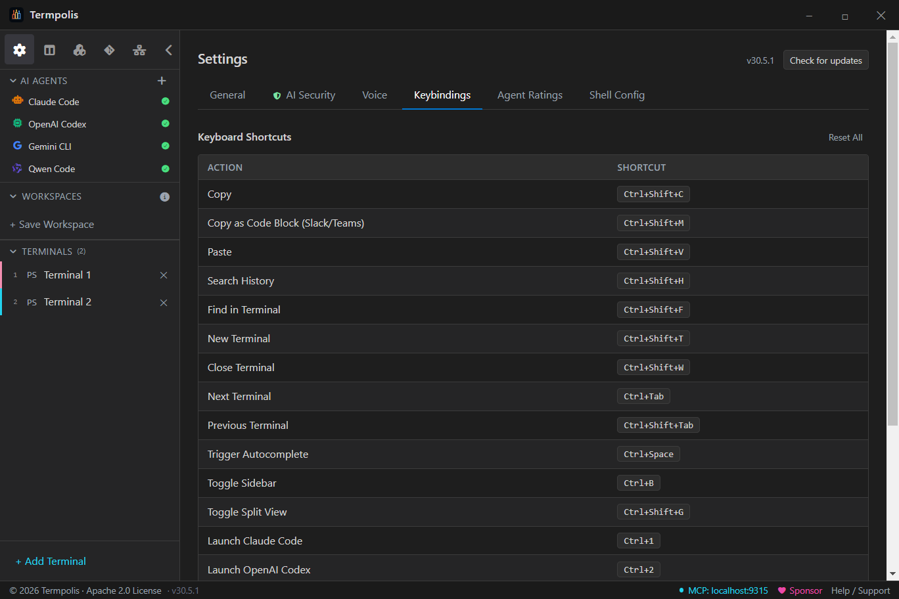
Bindings are platform-aware, Ctrl becomes ⌘ on macOS automatically. Conflicts are flagged inline when rebinding.
Voice dictation
Talk instead of type. Transcription uses Groq's hosted Whisper API — the few seconds you dictate are sent to Groq's cloud for transcription, and the text comes back into your terminal. It is opt-in and off by default, and it requires your own Groq API key. (There is no local/on-device engine; voice went Groq-only in v1.13.0.)
Turn it on (one-time setup)
- Open Settings → Voice and toggle Enable voice input on (it's off by default).
- Click Connect Groq, accept the consent notice (your recorded audio is sent to Groq), and paste a free Groq API key from console.groq.com/keys. The key is validated against Groq before it's saved.
- Optionally pick your microphone and hit Test microphone to confirm the level meter jumps when you speak, and choose the transcription model.
Your API key is never sent back to the renderer. Once you paste
it, it's stored encrypted with your OS keychain (Windows DPAPI, macOS Keychain,
Linux libsecret; on a Linux system with no keyring it is saved unencrypted in the
data directory) and used only in the main process to call Groq — it never
lands in session.json, settings, or any log. The renderer only
ever sees a masked hint (gsk_••••abcd) and a
connected flag.
How to dictate
- Tap Ctrl + Shift + L to start, tap again to stop — or hold it to talk and release to send. Both work on the same key by default (tap-or-hold). Tap-to-toggle and tap-then-press-a-key-to-send modes are also selectable under Activation; the hotkey and the send key are both rebindable. You can also click the mic button on the terminal pane, or the Listening… badge, to start/stop.
- In an AI-agent terminal (Claude · Codex · Gemini) your words are sent straight to the agent as a prompt — it absorbs minor mis-hearings, so just talk naturally. (Auto-submitting that prompt is an opt-in toggle, off by default, so you can still review before pressing Enter.)
- In a plain shell the transcript is inserted but never run automatically — you review it and press Enter yourself, so a mis-heard command is never executed for you.
- When dictation ends the caret returns to the terminal — keep typing or start another dictation without clicking back in.
Accuracy, no-speech handling & privacy
- Tuned for English. Groq's model defaults to
whisper-large-v3-turbo; you can switch towhisper-large-v3in Settings → Voice. - Guards against phantom words. Termpolis energy-gates your audio before sending and backstops the reply, so silence and quiet, steady background hum never reach Groq, and if other sound gets through and Groq answers with a bare filler such as “the” or “you”, it is dropped instead of typed — you get a notice, with the measured mic level when the capture gate caught it. If that keeps happening, pick the right mic and run Test microphone.
- Only what you dictate leaves the machine, and only to Groq. By default Groq does not train on or retain it; for the hardened setup, enable Zero Data Retention in your Groq console (the Connect dialog links you there). The free tier covers everyday use; paid is roughly $0.04 per hour of audio. If a transcription fails, a red error bar says exactly what went wrong (most often a missing/invalid key or no internet).
Agent capability ratings

The heart of smart swarm routing. Score each agent (Claude Code, Codex, and Gemini CLI) from 1–5 (5 = strongest) across 10 categories: Refactoring, Architecture, Testing, Documentation, Code Review, Debugging, Frontend, DevOps, Data Analysis, and Bulk Tasks. Defaults reflect model-family strengths; tune them to match your experience under Settings → Agent Ratings.
A per-agent Token Cost indicator (Free / Low / Medium / High) drives cost-aware routing, so the conductor can hand token-heavy bulk work to a cheaper agent.
Command palette
The palette is a keyboard shortcut to Termpolis's common actions. It lists actions, your prompt templates and your open terminals, filtered as you type.
Why use it
- Don't remember keybindings? Type the feature name and run it from the palette.
- Jump to any open terminal. Ctrl + K, type the terminal's name, Enter.
- Run a command from anywhere. Type run and the command, then press Enter; it runs in the active terminal. Past commands are in History search (Ctrl + Shift + H).
How to use it
- Press Ctrl + K.
- Type a query, e.g. split, new terminal, workspace, launch claude.
- Use ↑ / ↓ to select; Enter runs it; Esc closes.
Prompt templates
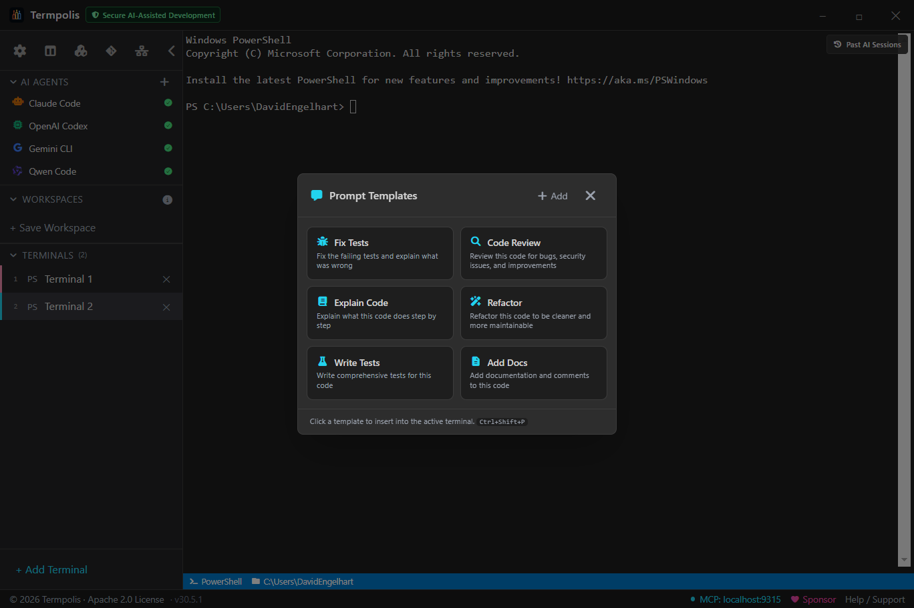
Save the prompts you type over and over. Clicking one types its text into the active terminal, ready for you to add detail and send.
Built-in templates
- Fix Tests, “Fix the failing tests and explain what was wrong”.
- Code Review, “Review this code for bugs, security issues, and improvements”.
- Explain Code, “Explain what this code does step by step”.
- Refactor, “Refactor this code to be cleaner and more maintainable”.
- Write Tests, “Write comprehensive tests for this code”.
- Add Docs, “Add documentation and comments to this code”.
How to use it
- Click into the terminal (usually an AI agent) you want to prompt.
- Press Ctrl + Shift + P.
- Click a template. Its text is typed into that terminal without pressing Enter.
- Add any detail, then press Enter to send.
Customizing
Click Add in the Prompt Templates window, give the template a name and
its text, and click Save. Your templates are kept in
session.json in your data directory; remove one with the × on its card.
Workflow Orchestrator
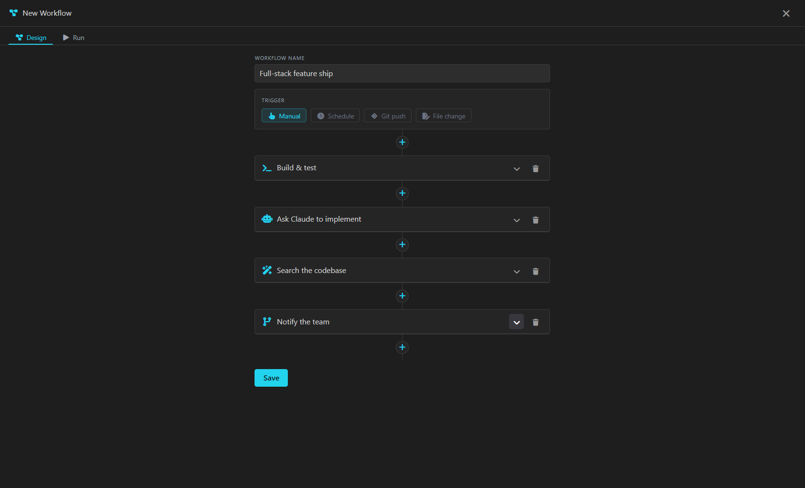
The Workflow Orchestrator chains commands, AI agents, and
built-in tools into one repeatable, saveable run. Open it from the
Workflows section in the sidebar: press the inline
+ (Start Workflow), name it, then add steps
with the inline + button. A project workflow is stored as
portable YAML in the project itself, under
.termpolis/workflows/ — commit it alongside your code and
the whole team gets the workflow.
The four step types
- Command — run a shell line on a real PTY. Inline or
from a script file, any shell (bash, zsh, PowerShell, cmd, git-bash), with an
optional timeout and a “Run visibly” box — leave it unticked. It opens no terminal pane (output streams into the Run tab either way), and a ticked step keeps its shell open, so it ends only at its timeout (10 minutes by default) and is marked failed. A Command step written by hand in YAML without
visible: falsebehaves as if ticked. - Agent — launch Claude Code, OpenAI Codex, or Gemini CLI on a prompt and wait for it to finish; a configurable done-marker detects completion.
- Skill — call one of Termpolis’s built-in tools (code search, memory, git status…) with JSON arguments, in-process, no terminal required.
- Control —
wait,branch,loop, ornotify: the flow control that turns a list of steps into a real program.
Gates, control flow, and data
Every step carries a when gate and an optional continue even
if this step fails. Later steps read earlier results —
steps.build.exitCode, a step’s captured output — inside
gates, branch conditions, loop guards, and notify messages. Expressions run
through a small, pure, sandboxed evaluator with a fixed operator set
(==, !=, >, <, >=, <=, and =~ for “contains”, plus steps.ID.ok / steps.ID.failed — one comparison per expression, with a space on each side of the operator and no && or ||); never eval, so a workflow
file can never execute arbitrary JavaScript.

Running it
Switch to the Run tab and press Run. The timeline shows every step’s status and duration in real time; Command and Agent steps stream their output into a pane you can scroll. Press Cancel mid-run to stop it: a running Command step’s shell is killed and every later step is marked cancelled. An Agent step is marked failed but its CLI keeps running in the background, and a loop already under way finishes its iterations first. The engine adds no randomness of its own — the same workflow, inputs, project and step results take the same path every time.
Triggers — running it automatically
A workflow can start itself. Pick a trigger at the top of the designer:
- Manual — the default; only the Run button starts it.
-
Schedule — a standard five-field cron expression
(
0 2 * * *= 02:00 daily;*/15 * * * *= every 15 minutes), or an alias:@hourly,@daily,@weekly,@monthly,@yearly. Times are your machine’s local time. If the app was closed when a run was due, it catches up once on the next launch — untick “Run at launch if it was due while Termpolis was closed” to skip missed runs instead. An invalid expression is never armed, so it can never fire. - Git commit — fires just after a commit lands on the checked-out branch. This is a post-commit hook, not a pre-commit one: it cannot block the commit, but it can lint, run the tests, or hand the new diff to an agent. Leave Branch blank to follow whichever branch is checked out (switching branches re-seeds rather than firing), or name one to watch only that branch.
-
Git push — fires when the remote-tracking ref moves
(
refs/remotes/origin/<branch>), i.e. after a successful push or fetch. Set Remote for a remote other thanorigin. -
File change — a recursive watch of the project folder,
debounced (Debounce (ms), default 2000) so a burst of saves
is one run. Paths takes comma-separated prefixes
(
src/, docs/) to narrow it; blank watches the whole project. Noise directories —node_modules,.git,dist,coverage, and Termpolis’s own.termpolis— are always ignored, so a workflow can never retrigger itself.
Triggers are watched inside Termpolis — there is no daemon, no installed
git hook, and nothing runs when the app is closed. Last-seen state is persisted
per project (.termpolis/workflows/.triggers.json), so restarting
does not replay a commit you already handled. An automatic run is identical to
pressing Run: same steps, same run history, same live timeline — and the
same workspace-trust gate, so a folder you have not trusted
never fires one. A trigger never starts a second run of a workflow while a run it
started is still going: a commit or push that lands meanwhile fires once that run
settles, a schedule that comes due fires afterwards when catch-up is ticked (the
default), and a file change is dropped. A run you start with the Run button is not
counted, so a trigger can still fire alongside it.
Global workflows, categories and inputs
A workflow does not have to belong to one repo. In the designer,
Availability switches it between
This project (saved in
.termpolis/workflows/, travels with the code) and
Global (saved once in your Termpolis data directory and
offered in the sidebar in every project you open). Switching
moves the file — it never appears twice. A global workflow always
runs in the project you are standing in, so one definition can
lint, test or release whichever repo you are working in. Its triggers arm
per project too: a nightly cron saved once fires once per repo you have
open, each with its own last-seen state.
Category is a free-text label that files the workflow into a collapsible folder in the sidebar — global and project workflows are grouped separately, each with its own folders.
Inputs are what make one workflow serve many targets. Declare
them in the designer (name, prompt label, default, required) and they are
collected in a small form on the Run tab before the run starts — a
required input left blank keeps the Run button disabled rather than starting a
run that cannot work. Every value is substituted as
${inputs.NAME} anywhere the expression engine reaches: command
lines, script paths, step cwd, agent prompts, skill arguments,
notify messages. In when gates and branch or loop conditions, write the reference bare — inputs.NAME == prod, project.branch == main — because a ${…} there is compared as literal text. Alongside inputs, every run gets
${project.cwd}, ${project.name} and
${project.branch} for free, so a workflow can branch on where it
is running without being told. Resolution is still sandboxed — no
eval, and an unknown reference collapses to an empty string
rather than leaking into a command line.
Context panel
The Context panel is a quick look at the folder the focused terminal is in: a narrow pane on the right listing its top-level files and folders, its git status and its last five commits, refreshed every five seconds. It shows what is in the folder, not what an agent has read.
What it shows
- Git Status and Recent Commits, the folder’s
git status --short(colour-coded) and its last five commits, with the folder path in the footer. - File Tree, the top level of that folder, folders first. It is a read-only list: folders do not expand and entries cannot be clicked or pinned.
Why it's helpful
- Pinned notes travel by copy-paste. The separate Pinned Context panel (Ctrl + Shift + B) keeps labeled notes per folder and builds a re-injection prompt you copy into any agent; agents cannot read pins on their own.
How to use it
- Press Ctrl + Shift + E to open.
- Click File Tree, Git Status or Recent Commits to collapse or expand that section.
- Agents do not read this pane; Claude Code and Codex get the same facts from their own Termpolis MCP tools,
get_file_treeandget_git_status. - Pins are not shown here: they live in the separate Pinned Context panel (Ctrl + Shift + B). Give each a label, a body and optional tags, click remove to delete one, and use Build re-injection prompt, then copy, to paste them into an agent. Pins are saved per directory under
context-pins/in the Termpolis data directory.
Token Headroom — compressing what the agent sends
Long sessions hit rate limits and compaction fast, and the biggest cost isn't your prompts — it's the file reads, command output and pasted screenshots the agent ships back to the model on every turn. Token Headroom compresses that traffic before it leaves your machine.
It is on by default for Claude Code and needs no setup. Every Claude
Code session started from the AI Agents list, the welcome screen, a saved workspace, Past AI Sessions or a swarm launches through a local compression proxy running in its own process —
never the UI or PTY thread — which forwards to api.anthropic.com
and nowhere else. If the proxy is ever unhealthy the launch silently goes
direct, and a live session self-heals when it recovers, so a proxy hiccup costs you
compression, not your agent. Codex, Gemini CLI and your shells never go through it.
- Turn it off with Route new Claude Code sessions through the local compression proxy in Settings → Token Savings (the tour's last step and the one-time privacy review offer the same switch). New sessions then talk to Anthropic directly; a session that is already running keeps its route until it ends.
- Your own route wins. If
ANTHROPIC_BASE_URL,HTTPS_PROXY,HTTP_PROXYorALL_PROXY(upper- or lower-case) is set, orCLAUDE_CODE_USE_BEDROCK,CLAUDE_CODE_USE_VERTEXorCLAUDE_CODE_USE_FOUNDRYis on — in Termpolis's environment, or in theenvblock of Claude Code's ownsettings.json(~/.claude/settings.json, or the one in yourCLAUDE_CONFIG_DIR) — the proxy steps aside. Settings → Token Savings names the variable it found; Claude Code keeps the route you configured, and nothing is compressed. - Kept on your machine, unencrypted. The full text of every compressed block is stored in
headroom/ccrin your data directory, capped at 200 MB, soretrieve_fullcan bring it back. None of it is sent to Termpolis.

What gets compressed
- Source code is outlined, not truncated (v1.35). Imports, declarations and every class/function signature survive; bodies collapse to
… 24 lines …. You keep the API surface of the whole file instead of the first and last few lines of it. Roughly 35 languages, brace- and indentation-delimited alike. It sees through thecat -ngutter on aReadresult so line numbers stay correct, and refuses to fire when the text isn't code or the outline wouldn't be meaningfully smaller. - JSON is compressed as JSON (v1.35). Long arrays keep their first entries and state how many were elided, long string fields are truncated in place, deep nesting is pruned, and the survivors are re-emitted minified. It refuses the payload entirely when any numeric literal is long enough to lose precision in a round trip — a corrupted ID the agent believes is worse than an uncompressed one.
- HTML is reduced to its readable text. Fetched web pages lose their markup, not their content.
- Command output and large file reads are bounded by a head/tail line window, with structured content given 3× the budget of prose.
- Pasted PNG images (screenshots) larger than 1280 px on the long edge are downscaled to 1280 px and sent as PNG, or as JPEG when the image has no transparency and that comes out smaller. Other image formats pass through untouched.
- Repeats and near-repeats. A result repeated in the same session collapses to a one-line reference. Since v1.34, a near-duplicate is sent as a patch against the earlier copy: read a file, edit three lines, read it again, and only those lines go over the wire.
- Tool results only — never a tool call's input (v1.49). v1.34 compressed both halves of the wire: the tool result that came back, and the
tool_usethe agent itself wrote. Since v1.49 the input half — aBashcommand, the body of aWrite, both sides of anEdit, a subagent prompt — is forwarded byte-for-byte, however old it is. It is still read as a dedup key and diff base, so a result that reads back a file the agent just wrote still collapses to a patch or a one-line reference.
What is never compressed — authored intent (v1.37.1)
A tool result is something the model watched happen: eliding it is safe,
because the model knows it did not write those bytes and can call
retrieve_full. A tool input is not. Those are bytes the
model itself emitted, and it replays them verbatim into your files and shells on the
next turn — so compressing them rewrites history, and the elision marker becomes
a real artifact ([headroom]: command not found from a shell, a stray
… in a source file). Artifact-bearing fields now pass through
untouched while still acting as dedup keys, keyed on behaviour rather than on which
client is in front of the proxy: Claude Code's content and
command, Anthropic's built-in text editor
(file_text, old_str, new_str) and
apply_patch's patch. The cost is about 1.7% of
measured savings. Since v1.49 this covers every field of every
tool call's input, at any age — a subagent prompt included, and prefix decay never
ages one out either — because the model reuses its own earlier inputs as
templates, and a stub copied from one would land in a real file, command or prompt.
retrieve_full tool to pull the original back. Since v1.34 that
cache is disk-backed, byte-capped and survives restarts, so a token
issued yesterday still expands today. Since v1.37.1 the per-entry cap is
64 MB (it was 8 MB, which a single large file read cleared),
anything above it is pinned in memory, the LRU prefers disk-backed victims, and the one
path that could genuinely destroy content is counted rather than inferred.
Why it doesn't bust the prompt cache
Naive compression costs you money: change one byte of the prefix and Anthropic's prompt cache misses, so the whole conversation is re-ingested at full price. Headroom compresses deterministically — stash tokens are content hashes rather than counters, so the same block always yields the same token no matter what came before it, and there is no clock or randomness anywhere in the compression path. A dedicated test suite asserts the compressed prefix is byte-identical across ten successive appends, when a duplicate arrives, when a near-duplicate is diffed, and at the hardest tier. The pane prints your live cache-read vs cache-create ratio so you can check it against your own traffic.
Reading the receipt
Settings → Token Savings reports against three denominators rather than picking the flattering one. The saving itself is estimated from the text removed (about four characters per token); the second and third figures divide it by Anthropic's real usage numbers on your machine, so your figures will differ from the ones below — these are the all-time values from the screenshot above.
| Denominator | Above | What it means |
|---|---|---|
| Compressible wire text | 50% | Of the tool text the compressor actually sees. The measure of the compressor itself. |
| All input tokens | 11% | Includes the cached prefix that is re-read every turn. |
| Effective cost | 8% | After cache-read and cache-write weighting. What it saves you in money. |
The last two are smaller by arithmetic, not weakness. Compression reaches tool results
and pasted images only — never a tool call's input, the system prompt, the tool
schemas, your own words or the model's replies; and roughly 30% of effective spend is output tokens,
billed at about 5× input, which no inbound compressor can reach. The panel also
shows worst-request and below-floor counts, prompt-cache health, and every
retrieve_full miss. It sums both compression surfaces — the wire
proxy and Termpolis's own MCP tool output — into a single gross/net/give-back
figure.
The untouched prefix (v1.36)
The system prompt and the tool schemas ride in front of every request, are re-sent
every turn, and are exactly what a cache write is billed 1.25× for. No
compression layer touches them — and until v1.36 nothing counted them, so the
receipt could not explain its own ceiling. Termpolis now measures that head on every
request, separating its own mcp__termpolis__* schemas from everyone
else's, and states it in the pane. It is measured before the round-trip guard
on purpose: a request we decline to compress still costs money, and those were
precisely the requests whose cost was invisible. The same pass detects whether output
steering is actually present on the wire, from the marker the steering module itself
exports — a detector that can drift from the thing it detects would report
“steering off” forever, and a false negative looks exactly like a disabled
feature.
Session depth — what a conversation costs to keep (v1.37)
Every other control here shrinks the body of a request. This one measures the thing no compressor can reach: a long conversation re-reads its whole history on every turn, and across 24,163 requests in 89 real sessions that re-read is the largest line on the bill. Cache-read bills at 0.1×, which reads as free right up until you notice a 320,000-token prefix being read three hundred more times.
The advisory prices a turn on cache-read and cache-write together. That is what removes the need for a fudged “cost of restarting” constant: the price of establishing a fresh prefix is already inside the shallow band's own units-per-turn figure, because those are exactly the requests that paid it. Whether a restart is worth it becomes subtraction. Termpolis refits the curve from your own traffic and reports nothing at all until a band has enough samples to be your curve rather than one session's accident. Re-priced across the measured corpus, capping at 50 turns models to −19% of the whole bill even after charging the full restart cost, and each restart can absorb about 12 extra requests of re-orientation before the saving is gone — that is the budget the memory brain has to fit inside.
The numbers, and where they come from
4,183 real requests captured from one developer's own transcripts — 35.2 GB
of request bodies — were replayed through the compressor. At the shipped default:
61.0% of compressible tool text removed (63.5% of tool results, 51.6%
of tool_use payloads — measured before v1.49 stopped compressing
tool_use input), median request 61.4%, and
93.8% of requests clear 50%. At the Maximum tier, 72.3%,
with 99.9% of requests clearing 50%. Cache-safety was measured over 62,716 real
requests with hits fully preserved. A regression test fails the build if any of these
thresholds is ever loosened.
The controls
- Compression tier. Conservative, balanced, aggressive and maximum. Aggressive is the shipped default.
- Savings floor. Raises the tier automatically if the ledger shows savings slipping below 50%. It only ever compresses harder than the setting above, never softer, and is decided at launch and frozen for the session — re-tiering mid-conversation would break the prompt cache.
- Prefix decay (history age-out). On very long conversations, the tool results in the oldest half are aged down to retrievable stubs; a tool call's input, and the result of a
retrieve_fullor memory call, never are. It ships on (Age out old history in Settings → Token Savings), but it is the one control here that is not free: shortening the prefix pays a one-off re-cache (~1.15× the prefix) to buy a smaller prefix on every later turn. It therefore waits for 128 messages before the first cut — about 3× the ~44-turn break-even — and the cutoff advances only at doublings (128 → 256 → 512 messages), so a 300-turn session pays a handful of breaks rather than one per turn. Aged blocks stay recoverable withretrieve_full. - Output-token steering. Nudges the agent toward terser replies. Output — thinking included — bills at roughly 5× input and is about 30% of measured effective spend, and inbound compression cannot touch it. The pane reports the observed steered and unsteered means side by side and labels them as an observation, never as a saving: different sessions ask different questions.
- Thinking-budget cap. Lowers an over-declared extended-thinking budget to a fixed per-session value (constant by design, or it would bust the cache). It only ever lowers the budget, never raises it — and unlike everything else here it trades reasoning depth rather than inline context, so it ships off.
Cross-AI context handoff & Past AI Sessions
Open Past AI Sessions from the button at the top-right of any AI terminal. Termpolis indexes every
~/.claude/projects/**/*.jsonl transcript on your machine, shows
them with project folder, age, git branch, size and first message, and lets you continue
the work in any of the three supported agents — without copy-pasting anything
by hand. (v1.11.47 added the cross-AI bridge; v1.11.48 fixed the freeze on
large session histories; v1.11.51 added Inject + Resume-here gating;
v1.11.52 made the inject paste land as a single bracketed-paste blob.)
What you can do with a past session
- Resume natively — spawns a new terminal at the original cwd and runs
claude --resume <session-id>. - Resume in active shell — runs the same
claude --resumecommand in the focused plain terminal instead of opening a new tab. Disabled when the focused tab is already an AI agent (so the command doesn't land inside the running agent's input box). - Continue in another AI — pick Codex, Gemini CLI or Claude Code from the Continue ▾ menu (the Gemini choice types the legacy
geminicommand, notagy, so it needs the old Gemini CLI on your PATH). Termpolis spawns a fresh terminal at the same cwd, boots the chosen agent, and pastes a synthesisedCONTEXT HANDOFFprompt summarising what's been done so the new agent picks up exactly where the old one left off. - Inject context into the focused AI — pastes the same handoff prompt into the active AI shell's input box. Disabled for plain shells (where it would just splat into the command line); the tooltip explains why.
Pasted as one blob, not a stream of commands
The handoff prompt is wrapped in xterm bracketed-paste markers
(ESC[200~ … ESC[201~) and its embedded newlines are normalised to
\r so the receiving agent treats the whole thing as a single paste
event rather than dispatching one keypress / submit per embedded line. Result:
the agent sees one coherent context block, not what previously looked like a
flurry of random commands.
History search
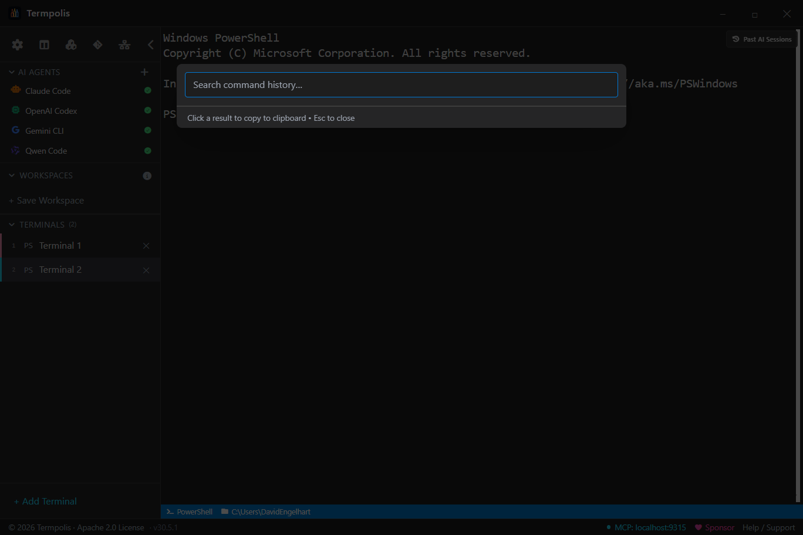
Spans every terminal Termpolis has ever opened, not just the current shell's history file. Type part of a command to find it; results are newest first and show the terminal and the time. Click a result to copy it to the clipboard.
Conversation search
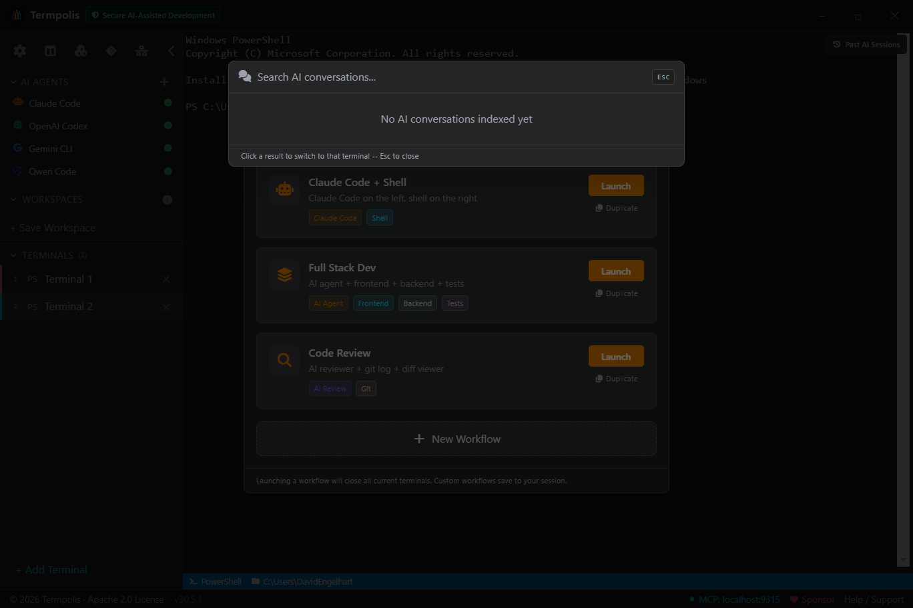
Open with Ctrl + Shift + I. Every AI agent session in
Termpolis, Claude Code, Codex, Gemini CLI, swarm runs, and the conductor
itself, is recorded event-by-event to agent-events.jsonl in the Termpolis data directory.
Conversation search does not read that log: it searches the prompts and replies of the AI terminals open now — for Claude Code, the newest session transcript for that terminal’s folder; for Codex and Gemini CLI, recent turns parsed from what the terminal displayed.
What's indexed
- Prompts, every user message sent to an agent.
- Assistant messages, the full reply text.
Filters
- Full-text, matches prompt text and assistant replies.
Why it's helpful
- "How did I fix this last time?", find the exact prompt and answer from earlier in a session that is still open.
- Reuse successful prompts. Find it, then click the hit to jump to the terminal it came from.
- Compare agent answers. Search the same question across agents to see how Claude, Codex, and Gemini differed.
How to use it
- Press Ctrl + Shift + I.
- Type a query, e.g. "regex for ISO dates", "docker-compose error", "why did claude say no".
- Click a result to switch to the terminal it came from; Esc closes the search.
Git panel & diffs
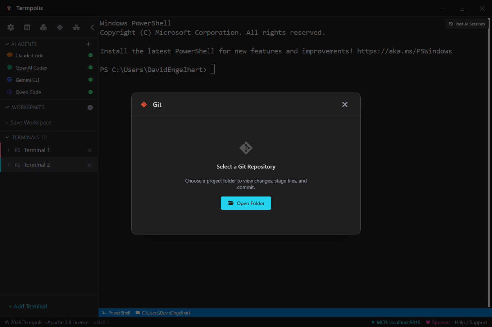
Open it from the git icon in the sidebar. It finds the repository itself, from the active terminal’s working directory; if that directory is not in one, it offers a folder picker and tells you plainly when the folder you chose is not a repository. The detected root is shown under the title, and clicking it lets you point somewhere else.
The panel holds:
- Current branch, beside the title.
-
Staged Changes and Changes, each collapsible and
each with a count. Files carry a status letter —
Mmodified,Aadded,Ddeleted,Rrenamed,Ccopied,Uuntracked — coloured, and named in full on hover. -
Stage / unstage. Hover a file for its
+or−, or use Stage All / Unstage All on the section header. -
Click a filename to read its unstaged changes in place (a file that is only staged, or untracked, shows “No diff available”): additions green,
deletions red,
@@hunk headers blue. Esc goes back to the file list, Esc again closes the panel. - Commit — the message box appears once something is staged. Enter commits. Pull and Push sit in the header.
Status is re-read every 3 seconds, so the panel does not go stale while an agent is working underneath it. A clean tree says so rather than showing you two empty lists.
Every action runs as a real git command in a spawned process, no
reimplementation, so you can always drop to the CLI and see the same state —
and your hooks, your config and your credential helper all apply exactly as they do
from a shell.
Commits and pushes made here pass the Commit & Push Secret Shield first: the staged diff is scanned before a commit, every unpushed commit before a push, and a hit blocks the operation rather than logging it.
Reading a diff an agent printed
When output in a terminal looks like a diff, a View Diff button
appears in the top-right of that pane. It reads the last 4 KB of the pane’s output (not the whole scrollback, so a longer diff is cut to its tail) and
renders it as a diff rather than as coloured text: ANSI stripped, split per file on
diff --git, and real line numbers reconstructed from
each @@ hunk header, so a line you are looking at is the line you would
open in an editor. There is a copy button for the whole thing.
The button itself appears only when a line of the raw output starts with
diff --git, which git’s coloured terminal output does not; right-click
the pane and choose View as Diff to open the same view on any unified
diff that reaches a terminal — an agent’s proposed
patch, a git diff you typed, output piped in from somewhere else.
Nothing has to have been staged, and it does not need to be a repository Termpolis
knows about.
The git mark on every terminal
Each terminal row in the sidebar carries a small git mark — plain shells, AI terminals, PowerShell, zsh and Git Bash alike, because a control that only sometimes exists is one nobody learns to look at. Outside a repository it is a dim, inert glyph with no click target.
Inside one it is grey and still when there is nothing outstanding, and amber and pulsing when there is. Outstanding means staged or modified or untracked or conflicted or committed but not pushed — that last one because committed-and-unpushed work is invisible everywhere else in the UI and is exactly the state people lose work from. Hovering gives the breakdown: 3 staged, 2 modified, 1 to push.
Being behind the remote is shown but never pulses. That is someone else’s work arriving, not yours waiting, and on a busy shared repository it would leave the mark pulsing permanently — which trains people to ignore it.
The mark follows the shell. cd into a repository and it lights up;
cd out and it goes inert, in every shell Termpolis supports
(v1.42.1). Polling is keyed by working folder rather than by terminal,
so ten terminals open in the same folder still cost one git status.
The current branch also appears in each terminal’s status bar, parsed live from the prompt.
AI agent profiles
An agent profile is a one-click launcher in the sidebar that
opens a terminal pre-wired for a specific AI CLI: Claude Code, Codex, or Gemini CLI.
The profile owns the launch command, the shell, the tab color, the label and, for
Claude, the model. You pick the working folder each time you launch it, and MCP
registration is not per profile: one switch connects Claude Code and Codex and adds Termpolis to Gemini CLI’s settings.json, which the Antigravity CLI (agy) behind the Gemini profile doesn’t read (see
Connecting your coding agents). Click the profile and you go from
"I want to use Claude" to "Claude is open and ready" with one click and a folder pick.
New here? Read Before you begin · API keys first to set the right env var, then follow Launch your first AI agent for the 5-step walkthrough.
What ships out of the box
- Claude Code — runs
claude. As a swarm worker it runsclaude --dangerously-skip-permissionsin interactive mode so the swarm conductor can drive it via MCP. - Codex — runs
codex. As a swarm worker it runscodex -a never -s workspace-write: it never stops to ask (a command that fails goes back to the model instead), and its sandbox keeps writes inside the project, with no network access. - Gemini CLI — runs
agy, the Antigravity CLI (Gemini’s current headless entry point), andagy --dangerously-skip-permissionsas a swarm worker; Strict Mode doesn’t seeagy, and guards ageminicommand only when it arrives in one write, such as a paste or a custom profile (see Gemini account-mode).
Pick a model per profile (Claude)
When you add an AI profile (the + in the AI Agents row), a Model dropdown lets you choose
which Claude tier that profile launches with — Fable,
Opus, Sonnet, or Haiku — appended to the launch
command as claude --model <tier>. You pass the alias, not
a pinned version number, so you always get the newest model in that tier
automatically (for example, the latest Opus): Termpolis never hard-codes a version,
so a newer release is picked up with no app update. Cheaper tiers show their token
savings so you can trade cost for capability, and the same alias drives the subtasks
the conductor assigns in a swarm. Leave it on
default to run whatever Claude Code is already configured to use. The Model
dropdown applies to Claude Code only — Codex and Gemini
run their own default models.
Install status indicators
Each built-in profile shows a green check if Termpolis can find its CLI on your PATH and a
red X if it can't. Click a missing one for its install commands (npm for Codex; an install script for Gemini CLI’s agy; npm or Anthropic’s installer for Claude Code).
The check runs every launch — install the CLI, restart Termpolis, the indicator
flips green.
Custom profiles
Click + in the AI Agents row to add a profile for any other CLI. You name it, point it at the binary (anything in PATH works), pick a shell, color, and, for a Claude command, a model. Termpolis connects its MCP server only to Claude Code, Codex and Gemini CLI (see Connecting your coding agents), so a profile for any other CLI participates as a plain terminal — fine for tools that don't speak MCP.
Renaming an agent terminal
Agent terminals are named after their profile ("Claude Code", "OpenAI Codex", "Gemini CLI"). Right-click the terminal tab to rename it, change its color, or swap themes — the underlying agent stays put.
Second Opinion
From any AI terminal, hand the most recent answer to a different agent for a quick, read-only critique. Its feedback is pasted back into the same terminal as an unsent block — you decide whether to send it to your primary agent or just read it and move on.
Every model has blind spots. Second Opinion lets a second model sanity-check the last solution before you act on it — e.g. drive Opus and ask Fable, or have Codex review what Gemini just proposed.
How to use it
- Open the Second Opinion… dropdown at the top-right of any AI terminal (it appears whenever an agent is running there).
- Pick a reviewer. The menu has one group per agent you have installed — Claude, OpenAI Codex, Gemini — each with a default row plus that agent's own models: Claude's Fable, Opus, Sonnet and Haiku (each always the newest in its family), and whichever models your installed Codex and Gemini CLIs currently offer.
- Read the feedback. Termpolis captures the terminal's recent output, runs the chosen agent over it, and pastes a concise review back into the terminal — unsent, so you stay in control.
What it does under the hood
- Read-only & safe. A review never needs file access, so it runs the agent in one-shot headless mode, read-only as the CLI itself enforces it — Claude in plan mode with no tools and no MCP servers, Codex in its
read-onlysandbox,agyin plan mode — so nothing it says touches your repo. The captured text is never parsed by a shell — it reaches the agent as one argument (on Windows, PowerShell reads it from a temp file as data and refuses a.cmd/.batshim), so a prompt scraped from your terminal can't inject a command. - Install-gated. Only installed agents appear. Gemini is accessed through the Antigravity CLI (
agy), its current headless entry point.
Termpolis Remote (phone app)
Termpolis Remote is an iPhone app that shows the terminals running in Termpolis on your computer and lets you type into them while you are away from the desk. It is a screen and a keyboard for your desktop, not a second Termpolis: nothing runs on the phone. There is no agent, memory or API key on it. Your agents keep running on the desktop, signed in the way they already are; the phone sends what you type and shows what they print. It is on the App Store as Termpolis R, and the phone app’s page covers pricing, its screens and support.

Off by default. Remote and Linked machines share the relay and one background process, but each has its own switch. A phone has no direct way to send work to a linked computer (with Type into terminals it can still ask an agent on the desktop to), and a linked computer can’t see your terminals. Switching either one on or off restarts that process, so the other’s connections drop for a moment.
Turning it on and pairing a phone
You need Termpolis running on the computer, and the app on an iPhone with iOS 16.4 or later. Relay access is a subscription in the app: $4.99 a month on the App Store, with the first week free for new subscribers. The desktop app stays free. Then, in Settings → Remote on the desktop:
- Tick Allow phones to connect.
- Leave Relay address at
wss://relay.termpolis.comunless you run your own relay (see How it is secured). - Under Pair a device, type a name for the phone (it defaults to “Phone”) and tick what it will be allowed to do. Only Read terminal output is ticked to begin with; see the next section. Click Pair a device.
- A QR code appears with a countdown. Scan it in the app. It works once and expires after 90 seconds; closing the dialog withdraws it. The desktop shows the code only as a picture, so the app needs camera access to pair.
- Both screens show the same eight words, worked out from the two devices’ keys. If they match, nothing sits in the middle. If they don’t, tap They do not match — unpair on the phone and Revoke the phone on the desktop.
Treat the QR code like a password for its 90 seconds. Whoever scans it first is paired, including through a screen share, a video call or a recording, and gets the permissions you ticked straight away: Termpolis doesn’t wait for you to compare the words. Pair where nobody else can see the screen. If your phone fails to pair, or Paired devices lists a phone you don’t have, revoke it.
What the phone may do
Each phone has its own permissions, chosen when you pair it and changed at any time with the checkboxes in its row under Paired devices. The desktop checks them on every request, and a change takes effect at once. The phone only reports them: its Settings screen lists What the desktop allows, and it hides the controls it isn’t allowed to use.
| Permission | Default | What it allows |
|---|---|---|
| Read terminal output | on | List the terminals in this desktop’s sidebar, each with its name and working folder, and stream the output of the one the phone has open. Swarm workers aren’t listed. |
| Start terminals | off | Start a terminal on this desktop. The app offers AI terminals only: Claude, Codex or Gemini (agy), in a folder picked by browsing the folders under this computer’s home folder. The desktop itself doesn’t hold the folder to your home folder, and would also open a plain shell. The agent runs the way Termpolis runs swarm workers: Claude and Gemini with their permission prompts skipped, Codex with approvals off in its workspace-write sandbox. |
| Type into terminals | off | Type into any open terminal and press Enter. This is a keyboard: it skips the command checks the AI terminals run behind, so anything the phone types runs as you. |
| Close terminals | off | End a running terminal. The current phone app has no control for this. |
The risk, stated plainly: Read shows everything your terminals print. Type can run any command as you. Start together with Type gives the phone an agent that acts without asking. Grant those two only to a phone you trust as much as the computer.
Using it
- The terminal list shows the terminals in that desktop’s sidebar, titled with the desktop’s name; swarm workers aren’t included. Pull down to refresh. While a terminal is open, the phone shows what its agent is doing (Thinking, Working, Waiting for you and so on) with a one-line summary; back on the list, its row keeps the last state the phone saw.
- Open a terminal to see its output as it is printed. The desktop works out cursor moves and redraws before sending, so a progress bar or status line shows its latest state, in colour. Opening a terminal brings back what its last 32,768 printed characters draw. Long lines scroll sideways instead of wrapping.
- Type, then tap Send. Termpolis types the text into the terminal and then presses Enter, as you would; several lines go in as one paste. There are no special keys (no Esc, Ctrl+C, Tab or arrows, and no Enter on its own), so a prompt that needs one has to be answered at the computer.
- New AI terminal (with Start terminals): choose Claude, Codex or Gemini, browse to a folder under the desktop’s home folder, and tap Start … here. The phone opens the new terminal, named after the agent and the folder, for example “Claude · myrepo”. On the desktop it runs hidden, the way swarm workers do, so it isn’t in the sidebar, and once you leave it the phone’s list doesn’t show it either.
- Several desktops. One phone pairs with up to 16 desktops, each with its own key, and shows one at a time. Desktops, at the top left of the terminal list, switches between them.
- Leaving the app disconnects it, and it reconnects when you come back. Output printed meanwhile is sent on when it reconnects: the newest 262,144 characters per phone, with a note saying how much older output was skipped. If iOS closed the app, reopening a terminal brings back only its recent output. The full scrollback stays on the desktop.
- On the desktop, the title bar shows a phone icon while a phone is connected. Each row under Paired devices shows whether that phone is connected or when it was last seen, its four permissions, Show safety words and Revoke.
Unpairing and revoking
- On the desktop, Revoke in the phone’s row (click again on Really revoke?) deletes its record and cuts it off at once. The phone isn’t told: it sees the desktop as offline until it is paired again. Terminals it started keep running. Revoking and changing permissions both need Allow phones to connect to be on.
- On the phone, Settings → Unpair from this desktop, or Desktops → Remove, erases that desktop’s key, and works offline. The desktop hears about it only if it is the one on screen and reachable; otherwise its row stays until you revoke it there.
- Unticking Allow phones to connect ends every phone’s session but keeps the pairings, and phones reconnect when you tick it again.
- After 30 days without contact, the desktop forgets a phone. Pair it again to reconnect.
- Deleting the app isn’t a reliable way to unpair, because iOS can keep an app’s Keychain entries after it is deleted. Unpair first.
How it is secured
- End-to-end encrypted. What you type, terminal output, terminal names, folders and the desktop’s name are sealed with ChaCha20-Poly1305 under keys derived (HKDF-SHA256) from an X25519 key agreement between the phone and the desktop: the same construction as Linked machines. Each direction has its own key, and a counter in every sealed frame rejects replayed and reordered frames.
- Fresh keys on every connection. Each connection mixes in new ephemeral keys, so traffic recorded today can’t be decrypted later, even if a device’s long-term key leaks. The pairing exchange itself is sealed under the long-term keys only.
- A pairing the relay can’t step into. The desktop’s public key and a one-time secret reach the phone only through the QR code on the desktop’s screen, never over the network, so a relay that never saw the code can’t open or forge the pairing. The eight words come from both devices’ long-term keys and are your check against a swapped code. They don’t change while the pairing lasts, and both devices can show them again.
- What the relay does see: both IP addresses, which side is the desktop and which the phone, when each connects, a room id that stays the same while the phone is paired, the size and timing of every frame (frames aren’t padded, so the length of what you send shows), and each frame’s unencrypted header (its type, public keys while pairing and connecting, a counter). It can delay or drop frames but can’t read or alter them. It stores no frames; the hosting provider’s logs keep connection metadata.
- An encrypted connection. The phone connects only to a
wss://relay, and it takes the address from the QR code. The relay’s source is in the Termpolis repository (relay/), so you can run your own: set it under Relay address. Phones paired earlier keep using the old relay, so pair them again after changing it. The desktop accepts aws://address, but the phone won’t pair with one. - Keys. The desktop has one identity key for all its phones, encrypted
with the OS keychain (Windows DPAPI, macOS Keychain, Linux libsecret) where one is
available, and stored unencrypted in the data directory on Linux without a keyring. The
app’s window only ever sees the public key. The phone makes a new key for each
desktop and keeps it in the iPhone’s Keychain, usable only while the phone is
unlocked and never moved to another device. The list of paired phones
(
remote-devices.json: names, public keys, room ids, permissions) is a plain file in the data directory. - Checked on the desktop. Every request is checked against that phone’s permissions before it runs. Terminal actions then go through the desktop’s own MCP server, limited to five tools: list, create, run a command in, type into and close a terminal. Each of those calls is written to the MCP audit log with the phone’s device id but not what was typed, and phones share the MCP server’s rate limits with your agents. Folder browsing and the output stream are handled by the bridge itself, so they aren’t in the audit log. The phone’s own requests reach no memory, swarm or other tools, though an agent it types to can use its own.
- Nothing runs or stays on the phone. No agent, model credentials, account, analytics or crash reporter. The app never writes output to disk; it holds up to 200,000 characters per terminal in memory. The camera is used only to read the pairing code.
Limits
- The desktop has to be running and awake, with Allow phones to connect on. The relay is a meeting point, not a mailbox: nothing is kept for a desktop that isn’t there, and Remote doesn’t keep the computer awake.
- Recent output only. Opening a terminal brings back what its last 32,768 printed characters draw; older scrollback stays on the desktop.
- Agents started from the phone run like swarm workers. They count toward the limit of 8 terminals agents can open over MCP, they aren’t in the desktop’s sidebar or the phone’s list, and clearing the swarm on the desktop closes them. Once you leave one on the phone, you can’t open it there again.
- The relay limits new connections to about 30 a minute from one IP address, reconnects included, which can bite behind a shared network.
- iPhone only for now, iOS 16.4 or later.
Linked machines (v1.50)
Linked machines pairs your Termpolis desktops with each other, the way a phone pairs with one. An agent on one computer can then have a Claude, Codex or Gemini agent on another do a task headlessly and get its final answer back as an ordinary tool result. It works in both directions and across any network: “Have Claude on linux implement the parser in ~/repos/foo and commit it, then review the commit yourself.” Nothing is typed into a terminal and no terminal opens on either machine. The work runs as a background job, and both computers list it under Activity.

Off by default. Linked machines uses the same relay and the same background process as Termpolis Remote, but the two switch on separately: turning on one never lets the other’s devices connect.
Turning it on
Settings → Linked machines, on both computers.
- Tick Let this computer link with my other computers. The pane shows the
relay in use, which you change under Settings → Remote. Making or entering a
code requires an encrypted
wss://relay. - On one computer, go to Link a computer. Choose what the new computer may
do here (see below) and click Create code. A code starting
termpolis-link:appears with Copy, a countdown and Cancel. It works once and expires after 5 minutes. - Carry the code to the other computer any way you like: a chat message, a shared folder, or typing it. Paste it under Enter a code from another computer, choose what the first computer may do there, and click Link.
- Both screens show the same eight words, and each suggests the other computer’s hostname as its name. Rename it if you like. Compare the words, then click They match — link on both computers. The words come from the two computers’ keys, so they match only if nothing sits in the middle.
Treat the code like a one-time password. Whoever uses it first can ask to link. If the other screen shows no words, or different ones, click Cancel instead of confirming.
Each computer runs nothing for the other until you confirm the words on it, and your agent won’t send work to a machine you haven’t confirmed. Until then, the other computer can learn only this one’s name and Termpolis version. Each linked computer gets a row in Linked computers with an online dot, its name (click to rename), its two permissions, when it last did anything, and Unlink. Activity lists the 20 latest jobs in both directions.
What a linked computer may do here
Each computer decides what the other may do on it, per linked machine. You choose when the link is made and can change it at any time.
| Permission | Default | What it allows |
|---|---|---|
| Run agents here (read-only) | on | Start a headless agent here in its own read-only mode. Claude runs in plan mode with only Read, Grep and Glob and no MCP servers. Codex runs in its read-only sandbox with Termpolis’s MCP server switched off. Gemini (agy) runs in plan mode. Codex keeps any other MCP servers in its own config, and agy keeps the ones in its own list, which Termpolis doesn’t add itself to. |
| Let agents edit files and run commands here | off | The agent runs unattended here, as you. Claude and Gemini run with permission prompts skipped; Codex runs in its workspace-write sandbox, which keeps its writes to the working folder and temporary folders unless your Codex config allows more. Turning it on turns on Run agents here too. |
The risk, stated plainly: a machine with Run agents here can have an agent read any file you can read on this computer and send it back. With edit, it can change files and run commands as you. Grant edit only to a machine you trust as much as this one. Permissions are checked on the computer that does the work, before any agent starts, and again when you change them: switching edit off stops that machine’s running edit jobs, switching Run agents here off stops all of its jobs, and unlinking stops all of its jobs. Stopping a job doesn’t undo what it already changed. The computer doing the work doesn’t ask you per job: the permissions are the decision.
How your agent decides to use another machine
Termpolis doesn’t split your work or schedule anything across machines. Your agent gets
one MCP tool, linked_machines, and uses it the way it uses any tool: when you ask
it to (“have codex on linux run the integration tests and summarise the
failures”), or when it judges a task belongs on the other computer — Codex is
blocked on this network, or the repo, the hardware or the test environment is over there. A
workflow you build can also call it as a step. A typical exchange:
list— which machines are linked and online, which agents each has installed, and whether this computer may run or edit there.run— a machine, an agent and a self-contained prompt, optionally a folder on that machine andwrite: true. The agent over there has none of this conversation, so the prompt carries what it needs: a commit SHA, earlier findings.- The answer comes back as the tool result, or, for a job still going after the wait, as a
jobIdthe agent collects withresult. - Your agent reviews the answer like any other and carries on: it can check the commit the
other agent pushed, ask a follow-up in a new
run, or report back to you.
The linked_machines tool
| Action | Arguments | Returns |
|---|---|---|
list | — | thisMachine, and for each linked machine name, online, confirmed, agents (installed there), canRun, canWrite, and a note explaining anything it could not find out |
run | machine, agent (claude, codex or gemini), prompt; optional cwd, write, model, waitSec | jobId, machine, agent, status (running, done, failed or cancelled), plus output, truncated, error, durationMs and note where they apply |
result | jobId; optional waitSec | the same as run |
machineis the name you gave it on this computer, in any case.promptmust be self-contained, up to 20,000 characters. The agent over there gets it after one line naming the computer that asked and the working folder. Like any headless run there, it also starts with that computer’s own memory primer (up to 6,000 characters), so its answer can quote that machine’s memory.cwdis a folder on the other machine, absolute or starting with~. It defaults to the home folder and must exist there. UNC network paths (\\server\share) are refused.write: trueworks only if that machine lets this one edit.runwaits up to 45 seconds by default (waitSec, at most 50), under the 60 seconds Codex gives one tool call. The other computer keeps a finished job for up to 2 hours, in memory.- Every failure comes back as data,
{ "error": "…" }, worded for the agent to act on or pass on to you. - Termpolis never pre-approves this tool: a Claude Code session asks you before using it (unless it skips permission prompts), and Codex is not told to trust it. Agents can call it at most 30 times a minute.
How it is secured
- End-to-end encrypted. Prompts, answers, folders and machine names are sealed with ChaCha20-Poly1305 under keys derived (HKDF-SHA256) from an X25519 key agreement between the two computers — the same pairing and sealing as Termpolis Remote. Each direction has its own key, and a counter in every frame rejects replays.
- Fresh keys on every connection. Each connection mixes in new ephemeral keys, so prompts and answers recorded today can’t be decrypted later, even if a computer’s long-term key leaks.
- An encrypted relay. Making or entering a code requires a
wss://relay. Keep Settings → Remote on awss://address: links this computer created use that setting when they reconnect. The relay’s source is in the Termpolis repository (relay/), so you can run your own. - What the relay does see: both computers’ IP addresses, a room id for the link, when each computer connects, the size and timing of each frame, and each frame’s unencrypted header (public keys while pairing and connecting, a frame counter). It stores no frames; the hosting provider’s logs keep connection metadata.
- Keys. The computer that enters a code makes a new key pair for that link; the computer that made the code uses its one identity key for all its links. Private keys are encrypted with the OS keychain (Windows DPAPI, macOS Keychain, Linux libsecret) where one is available. On Linux without a keyring, they are stored unencrypted in the data directory.
- Confirmed on each computer. A computer runs nothing for another until you confirm the eight words on it.
- Checked where the work happens. Permissions are enforced by the computer that would do the work, before any agent starts.
- Jobs, nothing else. The link carries only these jobs: a linked computer can’t list, read or type into your terminals, and gets none of a phone’s abilities. A job with edit permission runs as you, though, and can do whatever you can.
- Answers are scanned. Every answer is scanned for prompt injection on arrival, and one that looks like an injection is flagged as untrusted data. Prompts and answers are not scanned for secrets, so don’t put secrets in a prompt.
- No passing the work on. A delegated job doesn’t get
Termpolis’s tools: Claude and Codex jobs run with Termpolis’s MCP server switched
off, Termpolis doesn’t connect itself to
agy, and its agent connection refuseslinked_machinesinside a delegated job. A job with edit permission runs as you, though, so it can reach anything you can. - Your AI providers. Each agent’s provider sees what that agent is asked and answers, as always, and a job uses the doing computer’s AI account.
- Memory. Termpolis doesn’t save a job’s result to the doing computer’s memory itself, but a Claude or Codex job’s session is saved like any other, and the memory indexer can pick it up there.
- Records. The asking computer’s MCP audit log records each call an agent makes over MCP (not the prompt). The doing computer keeps its Activity list in memory until Termpolis quits.
Limits
- Both computers need Termpolis running, with Linked machines on and a connection to the relay. The relay is a meeting point, not a mailbox, so a request to a machine that isn’t there fails at once as offline instead of waiting.
- A computer that is asleep or shut down is offline. While it runs a job for another computer, Termpolis keeps it from idle-sleeping until the job ends; the display can still turn off, and closing a laptop’s lid can still put it to sleep.
- On a Mac, closing the window does not take the computer offline. Termpolis keeps running in the Dock, links and all. Quit it (⌘+Q) to go offline.
- Every run is a fresh headless session. No conversation carries over, though its memory digest can include earlier jobs once the indexer has picked them up. Linked machines does not copy files; code moves through Git.
- A job runs for up to 15 minutes by default. A computer runs at most 2 jobs at a time for any one machine, and 4 in all.
- The end of a long answer is kept, up to the last 200,000 characters.
Agents put their conclusion last; a shortened answer says
truncated: true. - Up to 16 linked machines per computer, counting both directions.
- Jobs live in memory. Quitting Termpolis stops every job it is running for other computers and forgets the finished ones.
MCP server
What MCP is, in plain English
MCP (Model Context Protocol) is the channel that lets an AI agent do things instead of just print things. With MCP wired up, when you ask Claude "open a new terminal in the repo root and run the test suite," it can actually do that — open a real Termpolis terminal, type the command, and stream the output back into the conversation. Without MCP, the agent could only suggest the command and ask you to copy/paste it.
If you're launching agents from inside Termpolis, there's one choice to make. Once you connect your coding agents, Termpolis registers itself with each of the three supported agents. The rest of this section is for people who want to understand what's running, debug an integration, or wire up a custom MCP client.
Connecting your coding agents
Termpolis doesn't register itself with an agent until you say so. The first step of the tour, or Settings → Agent Integration at any time, lists exactly what it would change for each of Claude Code, Codex and Gemini CLI installed on this machine. Connected, Termpolis:
- Claude Code — adds the
termpolisMCP server at user scope in~/.claude.json(under yourCLAUDE_CONFIG_DIRif you set one) and allows 27 read-only and memory tools insettings.jsonso they run without asking; tools that run commands or type into terminals still ask. It marks each folder you open an agent in as trusted — never your home folder, a folder above it, a drive root or a network share root — and, optionally, adds a SessionStart hook that loads your project memory whenever a Claude Code session starts, including sessions started outside Termpolis. - Codex — adds the
termpolisMCP server toconfig.toml(a different server you already namedtermpolisis left alone), pre-approves the 14memory_*tools unless you already chose a setting for them, and answers the folder-trust prompt for a folder you open it in, with the same exclusions. Its memory instruction rides on the launch command (-c developer_instructions) for that session only, and not at all if you set your own; nothing is written into your projects. - Gemini CLI — adds the
termpolisMCP server to itssettings.json.
When Termpolis answers a folder-trust prompt, it selects the trust option itself
instead of pressing Enter on whatever is highlighted. It never answers a permission,
approval or MCP prompt, a [Y/n] question or a numbered choice —
those wait for you — and while your agents aren't connected it doesn't answer
the folder-trust prompt either. On an agent's first-run screens it still presses
Enter and takes the default: Claude Code's intro splash, its theme and login-method
pickers, and Gemini CLI's terms and sign-in screens. Disconnect in Settings → Agent
Integration removes everything Termpolis wrote. Uninstalling on Windows or removing the
Linux .deb does the same (an update doesn't), and Termpolis --disconnect-agents does it from the
command line on any platform.
Whatever you choose, v1.49 also cleans up once after older versions: it removes a
permission that let every Termpolis tool run without asking, the duplicate Termpolis
plugin for Claude Code, Termpolis's entry in ~/.mcp.json, and any trust
for your home folder or a drive root.
Known limitations. Disconnect un-trusts only the folders this
version marked trusted: trust that an older version added can't be told apart from
trust you accepted yourself, so it stays. And older versions wrote a memory note
into AGENTS.md in project folders; Termpolis removes that note (and the
file, if the note was all it held) the next time you launch Codex from Termpolis in
that folder, not before.
How it's wired up
Termpolis runs an MCP server on http://localhost:9315 (the port is
shown in the bottom status bar — if 9315 is taken, Termpolis falls back to the
next free port and writes the actual port to the data directory). It's bound to
the loopback interface only and rejects any MCP request without the right bearer
token, so nothing on your network can reach it.
Connecting a custom client
Any MCP-aware client can talk to the server. Register it in the client's MCP
config — Termpolis writes a fresh bearer token to mcp-token in the
data directory (Windows: %APPDATA%\termpolis\, macOS:
~/Library/Application Support/termpolis/, Linux:
~/.config/termpolis/) on every launch, so update the header each time
Termpolis starts:
{
"mcpServers": {
"termpolis": {
"url": "http://localhost:9315/mcp",
"headers": {
"Authorization": "Bearer <contents of mcp-token>"
}
}
}
}The 40 tools an agent can call
Each entry below is a function call an MCP-aware agent makes through the protocol —
not a command you type. Every invocation is logged to mcp-audit.log in the data directory, and a call made by a Claude Code agent running in a Termpolis terminal also shows up, as that agent’s tool call, in the
Activity Feed. The code-graph tools (new in
v1.20.0) are backed by a local, native-free symbol index Termpolis builds from your
workspace on a background timer — see the Code graph
section for the full language list and the in-app browser.
| Tool | What the agent does when it calls this |
|---|---|
| Terminals | |
list_terminals | Enumerate open terminals — find an existing session to work in. |
create_terminal | Spawn a new terminal with a chosen name, shell, and working directory. |
run_command | Run a one-shot command in a terminal (used to start a long-running agent CLI). |
write_to_terminal | Type arbitrary text or control chars into a terminal's stdin (this is how the conductor sends task prompts to other agents). |
read_output | Read the recent output buffer from a terminal. |
close_terminal | Kill the underlying pty and remove the terminal. |
run_and_wait | Run a command to completion and return its exit code and output, so the agent sees pass or fail without scraping a terminal. |
| Project context | |
get_file_tree | List one folder the agent names — each entry’s name and whether it is a folder (one level deep, and only inside your home folder or the folder Termpolis was started from (on macOS that is usually /, so any folder)). |
get_git_status | Summarise the repo in a folder the agent names: current branch, git status --short, and the last 5 commits. |
test_coverage | Which lines of a file its own tests cover, from the project’s last coverage run. |
| Token Headroom | |
retrieve_full | Expand a compressed block back to the original text, from the token Token Headroom left in its place. This is what makes compression lossless: the agent asks for the detail on the rare turn it actually needs it. |
| Swarm coordination | |
swarm_send_message | Post an inter-agent message (broadcast or directed). Visible in the Messages tab of the Swarm Dashboard. |
swarm_read_messages | Read the message stream — agents poll this to check for handoffs. |
swarm_create_task | Create a task record in the swarm’s task list (called by the conductor for every subtask). |
swarm_list_tasks | List every swarm task with its status (pending / in-progress / completed / failed). |
swarm_update_task | Mark a task complete or failed and attach a result summary. |
swarm_list_agents | List the terminals in the current session (id, name, shell, folder) — the same list as list_terminals — so the conductor can route work. |
| Shared memory | |
memory_write | Persist a labeled memory entry into the shared memory store. |
memory_search | RAG search (semantic + keyword) across shared memory. |
memory_list | List recent memory entries with filters. |
memory_related | Undirected one-hop traversal — from a memory entry (or a query) to its neighbours, blending its typed graph edges with nearest semantic neighbours (undirected since v1.23). |
memory_audit | Read the local, secret-redacted audit trail of what the shared memory did — recent stores, recalls, learning steps and context injections — with a count of each. |
memory_link | Record a typed edge between two memories — builds the knowledge graph. |
memory_graph | Multi-hop walk of the knowledge graph from a seed memory. |
memory_primer | Load a ranked background-memory digest for the current project at session start. |
memory_anticipate | Before solving a task, surface the procedural lessons the fleet already found for it — the anti-re-derivation tool. |
memory_pool | Pool lessons across all agents into shared ones, each with its sources and how many agents independently reached it, most-corroborated first. |
memory_selfcheck | Report the brain's calibrated self-competence in a domain (confidence + track record) so the agent knows what it knows. |
memory_feedback | Tell the brain whether a recalled memory helped: helpful ones rank a little higher for everyone, unhelpful ones are demoted, and a net three unhelpful votes drop one from recall. |
memory_conflicts | Surface pairs of lessons that different agents learned that assert opposite things about the same subject, so the fleet’s disagreements can be found and resolved. Read-only and deliberately high-precision. |
memory_correct | Retract, amend or demote a memory that recall got wrong. Nothing is deleted, and the reason shows with the memory in later searches. |
| Code graph (local symbol index — new in v1.20.0) | |
code_explore | Ask one structural question and get the matching symbol’s verbatim source plus its direct callers and callees — instead of grepping and reading files. Backed by a pre-indexed local code graph. |
code_callers | List the symbols that call a given symbol — “who uses this?” — straight from the code graph, no grep. |
code_callees | List the symbols a given symbol calls — “what does this depend on?” |
code_impact | Blast radius: the transitive set of symbols that directly or indirectly call a symbol — what could break if you change it. Run it before editing a shared function. |
code_search | Find symbols (functions, classes, types) whose name matches a substring across the indexed codebase — a fast structural lookup. |
code_locate | Predict where an issue lives — give it an error or problem description and get back a ranked list of {file, symbol, why:[past lessons]}, the code most likely responsible with the fixes/decisions that point there. Crosses the memory↔code bridge (new in v1.23.0). |
| MCP gateway | |
gateway_list_tools | List the tools on the MCP servers you added in Settings → MCP Servers. |
gateway_call | Call one of those tools under the gateway’s policy: arguments are secret-scanned on the way out, results are injection-scanned on the way back, and every call is audited. |
| Linked machines | |
linked_machines | Have a Claude, Codex or Gemini agent on another of your linked computers do a task and return its final answer (list, run, result). Never pre-approved, so Claude Code asks before using it unless the session skips permission prompts. |
Security
- Bearer token. A random 256-bit token is generated per app launch and written to
mcp-tokenin the data directory. Every MCP request must include it in theAuthorizationheader; only the health check (/,/health) and CORS preflight requests answer without it. - Loopback only. The server binds to
127.0.0.1and refuses non-loopback connections. - No browser access. There is no origin allowlist: a web page cannot use the server because it cannot read the bearer token, and the CORS header allows only
http://localhost. - Rate limits. One shared limit of 200 requests a minute, plus tighter per-tool limits (
create_terminal10,run_command60,linked_machines30 a minute), protects the host from a runaway agent loop. - Audit log. Every tool call, and every denied or rate-limited request, is written as one JSON line to
mcp-audit.login the data directory (rotated at 1 MB, one backup kept).
Swarm dashboard
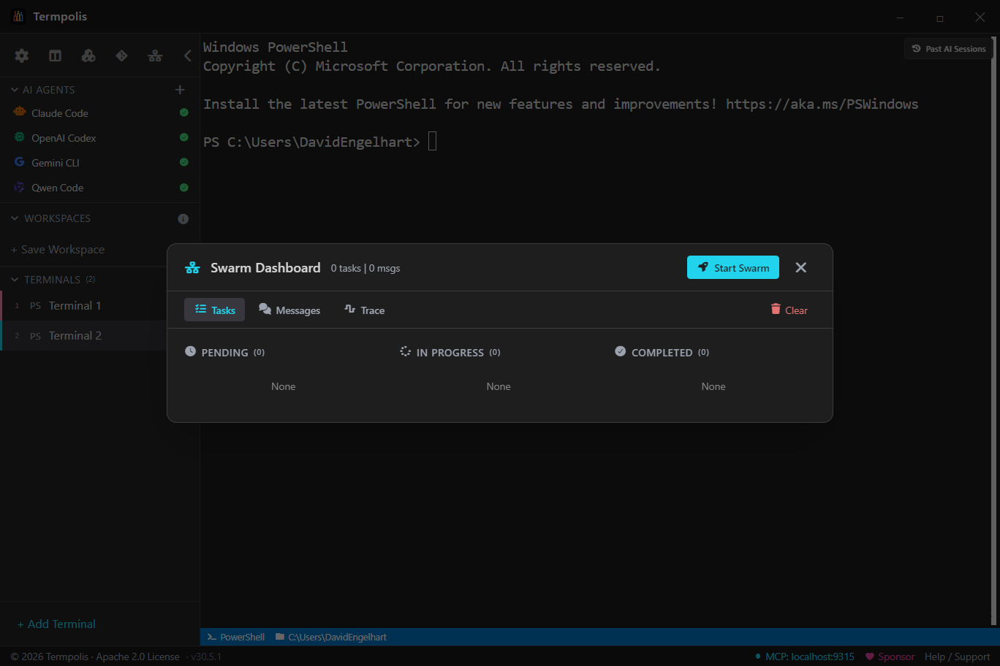
The dashboard is where you watch a running swarm. Three tabs, each answering a different question about the active run.
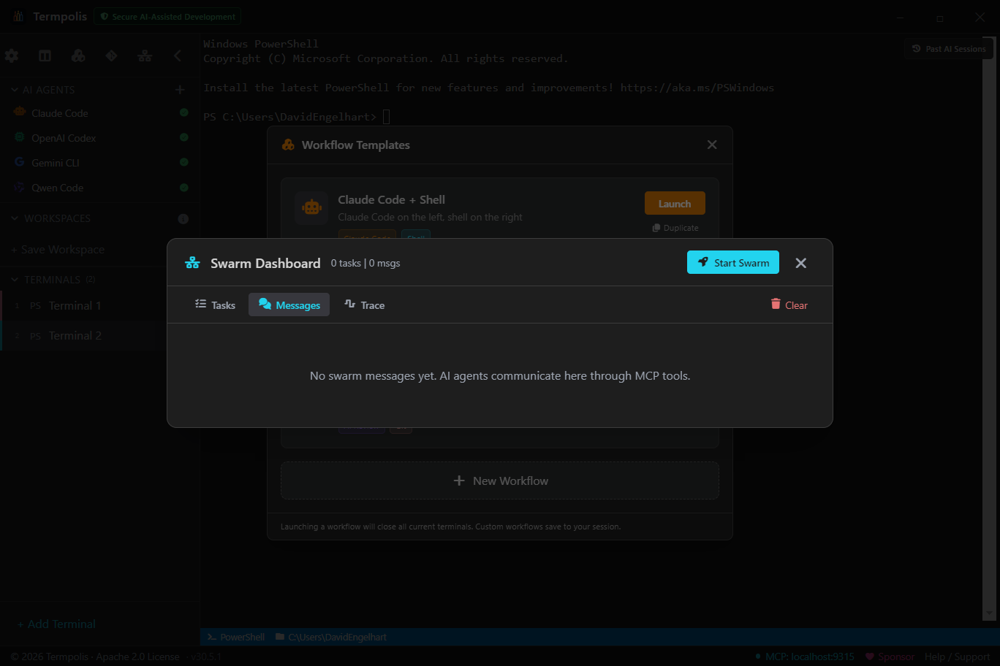
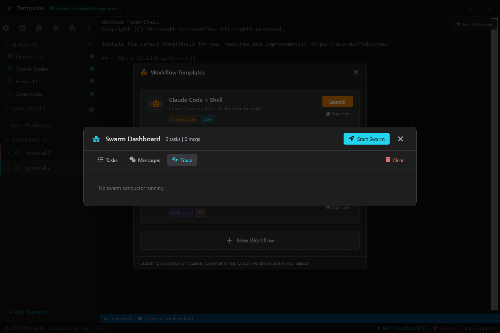
What each tab is for
- Tasks, answers "where are we?". Three columns, Pending / In progress / Completed (failed tasks land in Completed). Each card shows the title, description, who created it, who it is assigned to, when it was created, and the result once one is posted. Pending cards have Start and Cancel; in-progress cards have Done and Fail.
- Messages, answers "what are the agents saying?". Live stream of every handoff, broadcast, and tool result routed between agents. Use this to diagnose "why is Codex waiting?"
- Trace, answers "what is the conductor thinking?". Timeline of what the conductor says (THINK), the tools it calls (TOOL), the tasks it assigns (ASSIGN), completions (DONE) and errors (ERR). It stays empty until you reveal the conductor's terminal with Debug, because Termpolis collects activity only from terminals that aren't hidden.
How to use it
- Open with Ctrl + Shift + S at any time, no swarm needs to be running.
- If no swarm is active, click Start Swarm. A folder picker opens first — choose the project directory the swarm will work in, and only then does the Start Swarm wizard appear.
- Switch tabs freely, the dashboard stays scoped to the active run.
- Click Debug (shown while a swarm is active) to reveal the conductor's hidden terminal. Agent terminals stay hidden.
- Need to abort? Click Clear (trash icon) at the right end of the tab bar to end the run (see below).
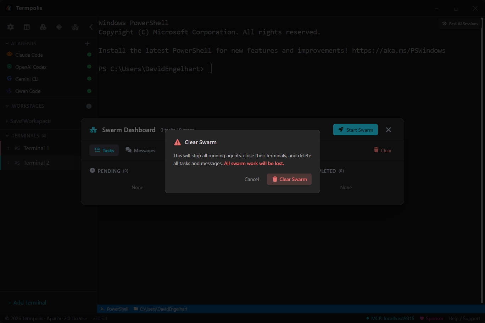
Clearing ends the run, not just the list: it stops the conductor, kills every agent terminal, and deletes the run's tasks and messages.
AI conductor
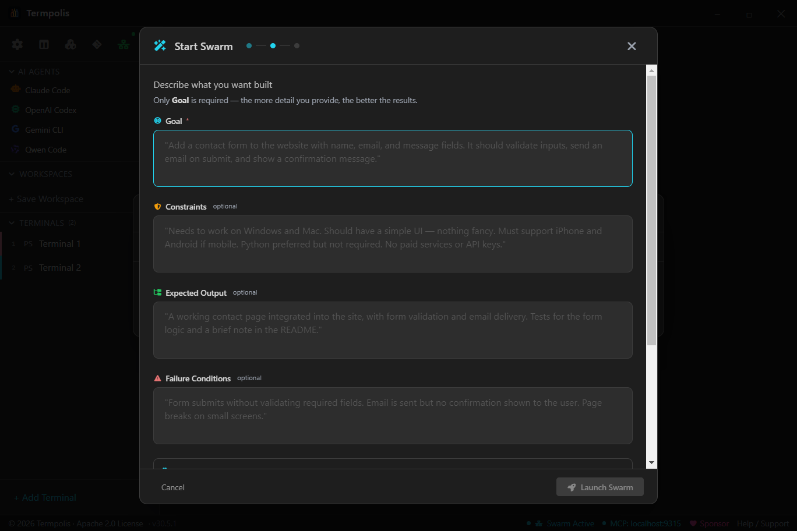
The conductor is a dedicated Claude Code instance running with a system prompt purpose-built for orchestration. When you launch a swarm, it's the conductor that reads your task, decomposes the task into subtasks, picks the best-fit agent per subtask (based on capability ratings and cost tier), delegates via MCP, watches progress, marks each task done as its agent finishes, and declares the swarm complete when every task is completed or failed.
Not keyword matching, actual AI reasoning, because the conductor is itself a frontier model. Click Debug on the Swarm Dashboard to reveal its terminal; it runs in Claude Code's print mode, so its output appears there when it finishes.
Before you start: a swarm always needs a project directory
Choosing a project directory is the first thing that happens, not a field inside the wizard. The moment you click Start Swarm, Termpolis opens your OS folder picker. The Start Swarm wizard will not open until you have picked a directory; if you cancel the picker, nothing launches and you are returned to where you were. This is deliberate, a swarm has no meaning without a root to work in.
That directory becomes the swarm's working directory, and it is inherited by everything the swarm creates:
- The conductor is started in it, so its file reads, greps, and git commands resolve there.
- The conductor is told to open every agent terminal in that same cwd, so agents start in this repo; Termpolis doesn't stop an agent from working outside it.
- The directory is written into the conductor's task contract, so the instructions each agent receives name the path explicitly.
- Shared memory leans toward this project: the memory primer lists its memories first (other projects' can still appear), and a search is limited to it only when the agent asks for that. The code-graph tools aren't scoped to the swarm's folder.
- The pre-swarm git SHA is captured from it, which is what makes the post-run diff and the "revert this swarm" action possible.
Launching a swarm, step by step
- Click Start Swarm on the Welcome screen, or press Ctrl + Shift + S to open the Swarm Dashboard and click Start Swarm there.
- Pick the project directory in the folder picker that opens immediately. This is required, the wizard does not appear until you choose one.
- Goal, describe what you want built in plain English. Be specific; the conductor's decomposition quality scales with your clarity. Launch Swarm stays disabled until Goal is filled in. Optional Constraints, Expected Output and Failure Conditions fields sharpen the brief.
- Launch Swarm starts the conductor with your brief, in the hidden terminal the wizard prepared when it opened. The launch screen shows the folder the swarm will work in and closes as soon as the conductor posts its plan or creates a task (or after a minute), leaving you on the Swarm Dashboard.
What happens next
- Conductor reads your task and posts its plan to the Messages tab.
- Breaks the work into subtasks and creates a task record for each; agents work on them in parallel.
- For each subtask, picks an agent from the installed agents' capability ratings and cost tiers.
- Spawns the agent terminal via
create_terminal(MCP) and sends the prompt viawrite_to_terminal. - Polls
swarm_list_tasksandswarm_read_messages, reads each agent's output withread_output, and sends guidance withwrite_to_terminalif an agent looks stuck. - When a task is marked completed or failed, Termpolis records the outcome and, if the task carries enough detail, distills a lesson from it into shared memory.
- When every task is completed or failed, presents a summary and offers a swarm review.
Not sure whether your task fits a swarm or a single agent? See the Swarm vs. single agent decision tree.
Activity feed
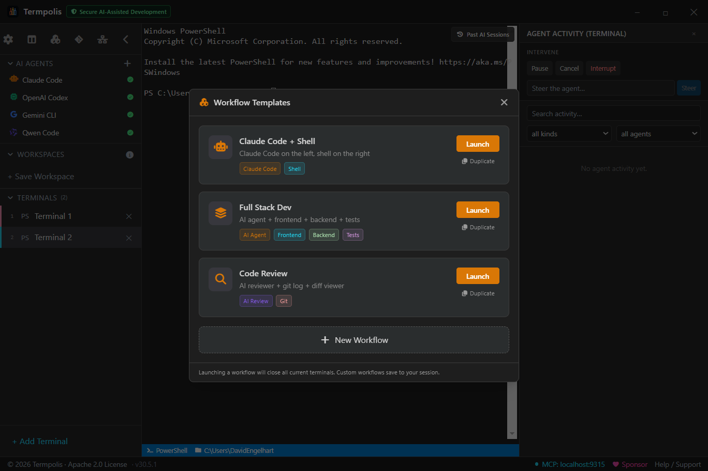
Open it with Ctrl + Shift + A; it opens scoped to the
active terminal. Event types: message, tool_call,
tool_result, token_update, compaction,
error, status_change, mcp_audit (the last three appear in the filter, but no agent watcher emits them).
Three filters combine: full-text search, kind dropdown, agent-type dropdown. Open scoped to a terminal or globally across all sessions, scope is labeled in the header.
Intervention controls
Every scoped Activity Feed includes a row of intervention controls above the event list:
- Pause, sends
ESC(0x1B) to the agent's pty. - Cancel, sends a single
Ctrl+C(0x03). - Interrupt, sends double
Ctrl+C(0x03 0x03), hard stop. - Steer, type a new instruction and send it directly to the agent's stdin.
Every agent is a pty, so writing control chars or text to stdin is the fastest, most reliable way to take over. No new IPC surface. The last intervention you sent is shown under the buttons; interventions are not recorded as events.
Swarm review
When a swarm in a git repository finishes, the Swarm Complete dialog offers
Review Changes and the Swarm Dashboard adds a Review
tab showing what the swarm changed in tracked files since the commit it started from.
Accept or Reject each hunk (or use
Accept all, Reject all or Reject entire
file), optionally Run tests, then Commit what
you kept or Revert all back to that commit; Refine
reopens the Start Swarm wizard on the same folder with your note and the previous
swarm's summary filled in. In v1.50.1, though, the Swarm Complete dialog stays on top of
the dashboard and closing it removes the Review tab, so the panel can't be opened yet;
check a swarm's changes with git diff instead.
Mneme — the shared memory that learns and never forgets
Mneme — named for the Greek muse of memory — is the local, growing “brain” that Claude Code and Codex share and that learns as you work. It indexes your past AI conversations (Claude Code, Codex, and older Gemini CLI sessions) and your repo’s code into a vector store on disk, distills a reusable lesson from each finished task, and lets either agent semantically recall what was decided or written weeks or even months ago — instead of you re-explaining context every session.


- Learns from every session (since v1.17). When an agent finishes a chunk of work, Termpolis distills what happened into a reusable lesson — the problem, the fix or decision, the gotcha — and records the fleet’s self-competence per project, so recall keeps improving. Automatic for Claude, Codex, and Gemini (read from their session transcripts on a task pause or when the terminal closes). Opt-out in Settings.
- Competence calibrated from real work (v1.25). The brain tracks how
reliable it has actually been in each domain — the calibrated confidence that
memory_selfcheckreports back. That calibration used to learn only from swarm tasks, or from a session that happened to end on an explicit outcome phrase, so for most people the panel simply sat empty. Now a landed commit and a test run — passing or failing — feed it directly. The failing suite is the valuable half: a red test run is what calibrates the fleet’s confidence down in a domain where it has been getting things wrong, instead of letting it carry on asserting. - Your code connections, on the dashboard (v1.25). Indexing a repo builds a structural code graph — symbols plus caller→callee edges — and that graph lives in a store separate from the semantic memory graph. The dashboard only ever counted the memory graph, so “connections” could read as empty on a machine that had already indexed thousands of call edges. The real code graph now surfaces as its own tile, so what you built is what you see.
- Shared by Claude and Codex. Both read and write the same store
over MCP, so a fact one agent learns is instantly available to the other. Gemini
terminals run
agy, which isn’t connected to it yet. - Flags cross-agent contradictions (new in v1.19.5). When two
agents record lessons that assert opposite things about the same subject — a
Claude lesson says “always run migrations before seeding,” a Codex lesson
says “never” — the
memory_conflictsMCP tool surfaces the pair so you can investigate and resolve it (record the winner, mark the loser with asupersedeslink). Read-only and deliberately high-precision — it would rather miss a subtle conflict than raise a false one. - Survives close & reopen. Stored as JSONL on disk
(
swarm-memory.jsonlin the data directory) and reloaded with its embeddings at startup, your context isn’t lost when you quit. - Scales past the file-size ceilings (v1.38). Shards are read as a
stream, 8 MiB at a time, rather than slurped whole —
Node’s
readFileSyncrefuses any file over 2 GiB, and a 2.3 GB store therefore used to fail to load at all while the pane cheerfully explained that your brain fills up as you work. Measured on that real store: 314,563 entries, 2.3 GB, decoded in about four seconds. Shards now also rotate at 1.5 GB so no single file can reach the ceiling again; rotated shards are never appended to, and compaction rewrites them together with the active shard. A shard that will not read is recorded and shown as a banner — “failed to load” must never look identical to “new and empty” — and nothing is lost either way, because compaction reads before it writes, so a shard it cannot read is a shard it cannot overwrite. - Feeds itself. A background indexer ingests new sessions on a quiet timer (idempotent, content-hash deduped), so the brain grows with no action from you.
- Never stores the same thing twice. Every write is content-addressed (SHA-256 over normalized text), so identical information is a no-op — the vector store and the on-disk log never accumulate duplicates, and nothing the brain already holds is re-embedded.
- Fully offline, no server. Embeddings run in-process via WASM with a
bundled
bge-small-en-v1.5model, no Ollama, no native binaries, nothing leaves your machine. And since v1.19.4 the embedding runs on a background worker thread — not the one echoing your keystrokes — so typing stays smooth while the brain loads its model and indexes. - Secrets are never indexed. The code indexer reuses the same
sensitive-file denylist as the read watcher, so
.envfiles, keys, and cloud credentials are excluded. - Each computer keeps its own memory. The Memory panel’s Sync across machines setting doesn’t work reliably in current versions: Termpolis forgets the chosen folder when it restarts, and turning it on for a store that is already encrypted can conflict with that store’s key. Leave it off. To use what another of your computers knows, link the two with Linked machines: an agent there starts from that machine’s own memory and works on its files.
- Portable — export / import the whole brain (v1.21).
Export… (Settings → General → Import / Export Memory) writes a
termpolis-brain-<date>.zipholding your memories, the knowledge graph, per-domain competence, identity, metrics, and the code graph — each SHA-256’d in a manifest. Import… verifies the zip CRCs and every hash before applying anything (a corrupt or tampered archive is refused whole, never half-merged), then grow-only-merges: memories and edges union in; the device-local learning files restore only on a fresh machine, never overwriting an existing brain. Your per-machine identity, sync config, and encryption salt are deliberately excluded. Back up, seed a new machine, or move your brain over any transport you like. - Encrypted at rest by default. The main memory log is sealed with
AES-256-GCM under a per-device key generated into your OS keychain
(Windows DPAPI, macOS Keychain, Linux libsecret) — no passphrase required, and
where no keychain is available it stays plaintext and reports so honestly rather than
writing a key beside the data. Termpolis transparently decrypts on read. Memories the
idle pass moves to the recoverable archive (
swarm-memory.archive.jsonl), the corrections log, and the knowledge-graph links are still written as plain JSON. - Scales into six figures. Vectors are packed into a typed-array store (about half the RAM of boxed arrays); past tens of thousands of entries an HNSW approximate-nearest-neighbour index engages automatically so search stays sub-linear (a few ms/query, measured). The graph lives off the JS heap and persists to disk. It builds once, lazily, in the background without blocking your searches — the first query after crossing the threshold returns instantly from the exact fallback while the index builds (frame-budgeted so the UI never stalls); every later search and launch uses the saved graph.
- It learns the connections. Beyond storing facts, the brain builds a
knowledge graph — typed links between memories (bug →
solved-by → fix, decision → supersedes → …). Agents
record links explicitly with
memory_linkand follow the chain across hops withmemory_graph; curated writes auto-link to their nearest neighbours, so the graph gets denser — and recall gets smarter — the more you use it. - Consolidates while idle — the “sleep” pass (v1.17). Between tasks a planner compresses the brain the way sleep consolidates memory: stale, untagged, edge-free episodic chatter decays out, near-duplicates merge, and dense clusters roll up into a summary. It only ever plans compression and writes archival edges — the “forgettable” gate is deliberately narrow, so a tagged, linked, or important memory is never destroyed.
- Reasons over the edges, not just stores them (v1.17). Relation
types matter at recall time: a
solvesorcaused-byedge pulls its neighbour up, a memory a newer onesupersedesis dropped so stale answers stop resurfacing, and an edge outside its valid-from / valid-to window is excluded from traversal. - Ranks by learned utility, not raw similarity (v1.17). A hit’s
score fuses semantic relevance, recency, per-kind weight, importance
(reflection scores a distilled lesson high), and how often that memory has actually
proven useful (reinforced via
memory_feedback) — then an MMR diversity rerank keeps a cluster of near-identical hits from crowding out varied context, with a floor so a thin recall never starves the agent. - Auto-recovers from compaction. When Claude Code compacts its
conversation to fit the context window, Termpolis watches the terminal, waits for the
compaction to settle, and once the agent’s input line is empty, types a one-line
instruction to reload its memory digest with
memory_primerand presses Enter, so it picks right back up (a Claude session Termpolis launched with its memory seed reloads the digest itself, so nothing is typed). Debounced through the whole compaction and cooldown-guarded to fire once; opt-out in Settings. - See compaction coming. A live context-pressure pill in the status bar shows how full the focused agent’s window is — healthy → filling up → nearly full → compaction imminent — from real token counts when the agent reports them (Claude) or a labeled heuristic otherwise. You watch the pressure build and know recovery is handled, instead of being surprised by a compaction.
- Observable, fresh & trustworthy recall (v1.16.7). Memory
priming is invisible by design (a system-prompt file plus a SessionStart hook), so a
working recall used to look identical to nothing happening. Now every primed launch
shows a banner —
🧠 Loaded N memories, or a clear warning if the brain was unreachable. A fast indexer tier (~90 s cadence, freshness-limited) makes the active session searchable within seconds instead of waiting the full 30-minute pass; recall flags any code reference whose file has since been deleted as⚠ STALErather than handing it back as fact; the memory hook resolves an absolute Node path so it still fires under thin-PATH login shells (NVM and friends); and an adaptive relevance floor keeps weak, off-topic hits out of the digest entirely.
What memory can and can’t tell an agent
- Recall returns excerpts. A past conversation is stored in pieces of
about 2,000 characters, so a search hit can start or end mid-sentence. Pieces from one
session are usually linked in order:
memory_graphwith the hit’s id and relationfollowsreads on, andprecedesreads back. If reading on stops early, search again. The primer tells agents this. - Search ranks by similarity, and rarely comes back empty.
Even a search with no relevant memory usually returns its closest matches with high-looking
scores, so judge a hit by what it says, not by its score. For the latest entries in
order, use
memory_listwith your project. - Memory records what was said, not what is true now. A note that a disk was 48% full was true when it was written. Agents are told to verify anything they rely on.
- Each computer has its own memory. Something you did on another computer isn’t in this one’s memory, and something that happened outside an agent session (plugging in a drive, say) isn’t in any. An agent on a linked computer starts with a short digest of that machine’s memory (up to 6,000 characters), but can’t search it.
- Lessons are extracted automatically, and the extractor can be wrong
(improved in v1.50.1). Through v1.50.0 it read many ordinary sentences as
problems and decisions, and those lessons ranked first in recall. v1.50.1 tightens its
rules and, once, demotes the lessons it stored by mistake, so they rank lower in search.
A demoted lesson is still stored and still returned, ranked lower. Correct a bad lesson
as it surfaces with
memory_correct; nothing is deleted.
The MCP tools any agent can call:
- Search via
memory_search, semantic vector search blended with keyword overlap. - Write via
memory_write, persist a fact or decision for the others. - List via
memory_list, recent entries with filters. - Relate via
memory_related, jump from one memory to its neighbours — undirected since v1.23, blending typed edges with nearest neighbours. - Link & walk via
memory_linkandmemory_graph, record typed connections and follow the chain across hops. - Anticipate via
memory_anticipate, surface solutions the fleet already found for the task at hand before you start solving it. - Pool via
memory_pool, gather the cross-agent lessons that two or more agents independently arrived at — the fleet’s most-corroborated knowledge. - Self-check via
memory_selfcheck, ask the brain how reliable it has been in a domain (calibrated confidence from past outcomes). - Reinforce via
memory_feedback, mark a recalled memory as helpful so the ones that keep paying off rank a little higher for everyone. - Correct via
memory_correct, retract, amend or demote a memory that recall got wrong; nothing is deleted. - Prime via
memory_primer, load the project’s background digest at the start of a session.
Why it matters: when Claude figures out your auth module, Codex shouldn’t have to
figure it out again, and you shouldn’t burn tokens re-pasting context every
session. A pre-context primer can inject the most relevant memories at an agent’s
first prompt so it starts already knowing the background. And because the brain lives
outside any model’s context window, it holds months of history without forgetting:
when an agent’s own window compacts, the detail isn’t lost — it’s
still in the store, one memory_search away. (Termpolis doesn’t change
how a model compacts its own window; it makes compaction non-lossy and saves you from
reloading context.)
Controls: open the Memory panel (Ctrl+Shift+M, or the
Command Palette → “Memory”) to see what’s remembered, search it,
feed it on demand (“Index past conversations” / “Index this
repo’s code”), and inject the most relevant context into the active agent
with one click.
Vector memory & the int8 toggle (v1.25.5)
Settings → Memory & Learning → “Vector memory”.
Storing your embeddings as int8 instead of exact float32 uses
4× less vector RAM (1 byte per component instead of 4). That is
the entire mechanism. The interesting part is that Termpolis will not simply hand you the
switch.
Why this needs a panel at all. Since v1.26 your vectors live in a separate memory process, not in the main process that pumps the PTY, so a large store costs RAM rather than typing lag. (If that process ever fails to start, the brain falls back to the main process, and the Memory & Learning tab says so.) Nobody can answer “should I enable int8 vector quantization?” in the abstract, and a bare toggle would be a trap — it sounds like an optimization, so people would flip it on principle. It is therefore a decision aid: it reads your store’s vector count when you open the tab (or press Refresh) and tells you whether the toggle is worth it.
What it reads (when you open the tab, or press Refresh)
| Reading | What it tells you |
|---|---|
| Vectors | How many, at what dimension, and in which representation — float32 (4 B/component, exact) or int8 (1 B/component). |
| Vector RAM | What they actually hold right now, and what they would hold in the other representation. (They live in arrayBuffers, off the V8 heap — so a heap graph would not have shown you this.) |
The verdict — including the one that says don’t
From those numbers the panel gives a recommendation, and the burden of proof sits on enabling:
| Verdict | When | What it says |
|---|---|---|
| Not needed | Vectors under ~256 MB | There is no version of this that helps. Leave it off. This is the correct state for most users, forever, and the panel will tell you if that changes. |
| Your call | Vectors at ~256 MB or more | int8 would free a real amount of RAM and is reversible, but the panel does not measure whether that RAM is costing you anything, so it does not claim it is. Turn it on if you want the headroom back; leaving it off is not a mistake. |
| int8 on | Already enabled | Exact floats are still on disk; switch back at any time and lose nothing. |
Not needed is the verdict that makes the other two worth reading. The
cost of a wrong yes here is invisible (you quietly approximate the one thing the
brain exists to do) while the benefit is imperceptible until the corpus is genuinely
large — so the panel is built to be willing to talk you out of it.
Does it cost recall?
No measurable loss — and that is gated, not asserted. Retrieval is
two-stage: a fast int8 gather over a widened candidate set, then a rescore of
those candidates with the exact float query against the dequantized rows, which recovers
the precision that matters for the final ranking. The offline recall benchmark runs the
real bundled bge-small-en-v1.5 model against the float baseline and
fails the build if int8 falls more than 0.04 below the committed float baseline on recall@10, nDCG@10 or MRR. Measured:
recall@10 and recall@5 identical to the exact-float
baseline, with nDCG and MRR within 0.001. It is only worth shipping if it keeps recall, so
that is a CI gate rather than a promise.
Turning it on and off
- Off by default. Exact vectors are the better default until memory is actually costing you something.
- Losslessly reversible. The copy on disk always keeps exact
floats.
int8is an in-RAM representation — it is not a data migration, and nothing is ever destroyed. Turning it on repacks the in-memory store; turning it off restores exact floats from disk on the next load. Memories written before the flip are still there, and still recallable, after it. - It only touches the vectors. Your memories, the knowledge graph, the code graph, and the audit trail are unaffected.
The Weave — one fabric across memory, code, and every repo (v1.23)
v1.23 “The Weave” joins the shared memory and the code graph into a single self-weaving fabric. Recall stops at text — it points at the code a lesson is about — and the non-obvious connections across your whole workspace are drawn ahead of time, so agents reason faster. Everything below is local-first, append-only, and native-free, and forms as you work — nothing to set up.
- Memory ↔ code bridge. Stored lessons and decisions now carry structured code anchors (file + symbol), resolved from the code graph when the lesson is written. Recall can cross straight from a fix to the exact function it lives in, and a reverse lookup surfaces everything the brain knows about a given symbol. The two stores used to have disjoint id spaces; now they share a join key.
- Predict where to fix it —
code_locate. Give it an error or a problem description and it returns a ranked list of{file, symbol, why:[past lessons]}— the code sites most likely responsible, each with the fixes and decisions anchored there, scored by code-graph centrality × the utility of those lessons. It’s the 32nd MCP tool, so an agent reaches for it first when debugging instead of grepping. Thewhylist grows richer over time as new lessons are anchored and the weaver backfills older ones. - The Weave — an always-on background connection-miner (flagship). Between tasks, a weaver continuously draws connections across the entire unified brain: cross-repo code-structure analogies (a pattern in one repo that echoes one in another), cross-repo answer/decision analogies, and the memory↔code bridge edges above — each materialized ahead of time with provenance and a confidence/weight floor so the graph stays high-signal rather than flooded. It runs on the same idle indexer tick that powers semantic recall.
- Automatic bug → fix edges. When a task that hit a problem finishes,
Mneme now mints the causal
solvesedge to an entity node for the error automatically, so “this error → that fix” is traversable later without anyone hand-linking it. - Rock-solid, never-delete memory. Idle consolidation moves aged memories to a cold-archive tier instead of deleting them — nothing curated is ever permanently lost — and deep recall can still reach archived entries and history beyond the hot search window. Cross-repo transfer is relevance-scoped, so one unified brain gives cross-project reuse without the noise.
- Sharper learning. An opt-in LLM distiller (set
TERMPOLIS_MNEME_DISTILLER=1) writes richer, more precise lessons than the default heuristic;memory_relatedis now undirected, so a typed connection surfaces from either end. - The
explainsedge — memory bound to the code it explains (v1.25). A new typed edge links the lesson that explains a piece of code to the code chunk itself. It is deliberately hard to earn: an edge is minted only when the memory and the chunk clear both an embedding-similarity bar and a shared file/symbol anchor — semantic resemblance on its own is not enough, so the graph doesn’t silt up with vague thematic links. The weaver also mints intra-repo analogies now, not just cross-repo ones (a pattern that echoes another pattern in the same codebase was previously invisible to it), and the analogy similarity floor relaxes from 0.82 to 0.72 — enough to surface the useful near-misses the stricter floor had been quietly dropping.
Code graph — structural code understanding (automatic)
Alongside the semantic memory, Termpolis builds a native code graph of your repository — every function, class, method, and the calls between them — so your AI agents can answer “who calls this?”, “what would this change break?”, and “where is X defined?” in one step instead of grepping the same files over and over.
It’s automatic. Opening a terminal in a repo indexes that repo’s code, and an edit re-indexes just the changed file (debounced, AST-first) — the same setting (Auto-index everything, on by default) that powers semantic recall. No clicks; opt out in Settings. As of v1.23 the graph is keyed per repository — a durable on-disk store per repo, so opening a second repo no longer clobbers the first, and a transient non-git directory (or git off the PATH) won’t wipe a graph you’ve already built.
How agents use it. The graph is exposed to the agents Termpolis connects (Claude Code
and Codex; not yet the agy behind Gemini) over MCP as six read-only tools, and Termpolis nudges them to
prefer these over grepping:
code_explore— a symbol’s source plus its direct callers and callees, in one call.code_callers/code_callees— who uses this / what it depends on.code_impact— the transitive blast radius of a change, before you make it.code_search— locate any symbol by name across the codebase.code_locate— predict where an issue lives (file + symbol + the past lessons that point there), crossing the memory↔code bridge. New in v1.23.
Browse it yourself. The Memory panel (Ctrl+Shift+M) includes a
Code Graph browser — search a symbol to see its source, callers, callees, and blast
radius, or force a rebuild.
Languages. Deep, AST-precise support (symbols + methods + call edges) for
TypeScript/JavaScript, Python, Go, Rust, Java, C#, Ruby, and Swift — parsed by
web-tree-sitter (WebAssembly) with pre-built grammars; Terraform and Bicep
fall back to a regex heuristic for symbol discovery. Still fully local and
native-free — the parser is WASM, not a native binary, so nothing is
compiled and nothing leaves your machine; secrets (.env, keys) are never indexed.
Observability
A full observability stack for AI work, the "watchers" system. A lightweight in-process event bus that watches for:
- Redundancy, two agents doing overlapping work.
- Efficiency, tokens in and out, tool calls per message, error rate and files touched for each Claude Code and Codex agent over the last 30 minutes (Gemini terminals run
agy, whose sessions Termpolis doesn’t read, so they don’t appear).
Redundancy (Ctrl+Shift+D) and Efficiency (Ctrl+Shift+Y) are panels you open yourself, next to the Activity feed (Ctrl+Shift+A). Nothing is raised in the status bar or as a system notification, and there are no thresholds to tune.
Status bar
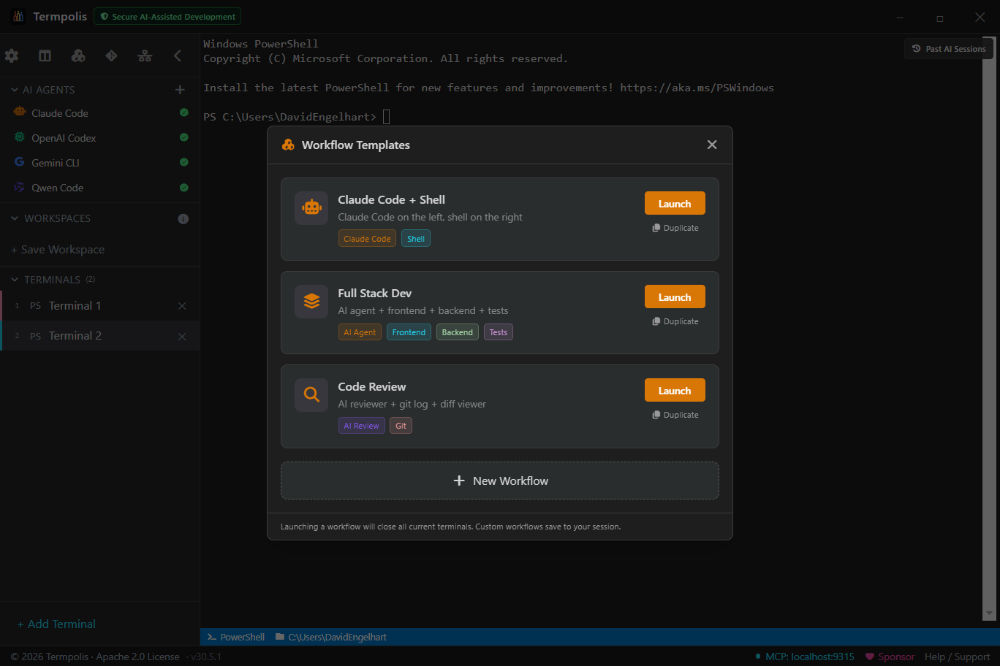
Each terminal has its own blue strip: a REC badge while recording, the agent badge,
shell, working directory and git branch. The bottom strip shows, left to right:
copyright, license and your Termpolis version; then Swarm Active with
running/total agents and any errors (only while a swarm runs), the focused
agent’s context-window fill (ctx N%, when known), the MCP address
(always localhost:9315; it is not a health light), Sponsor, and
Help / Support.
Keyboard shortcuts
| Action | Windows / Linux | macOS |
|---|---|---|
| Command palette | Ctrl+K | ⌘+K |
| New terminal | Ctrl+Shift+T | ⌘+⇧+T |
| New terminal (global — works when minimized) | Win+Shift+T | ⌃+⌥+T |
| Close focused terminal | Ctrl+Shift+W | ⌘+⇧+W |
| Next / previous terminal | Ctrl+Tab / Ctrl+Shift+Tab | ⌃+Tab / ⌃+⇧+Tab |
| Jump to terminal N | Alt+1…9 | Not available (⌥ turns the digit into a symbol) |
| Launch agent 1–3 (Claude / Codex / Gemini) | Ctrl+1…3 | ⌘+1…3 |
| Toggle sidebar | Ctrl+B | ⌘+B |
| Toggle tab / split view | Ctrl+Shift+G | ⌘+⇧+G |
| Clear terminal — screen and scrollback | Ctrl+Shift+X | ⌘+⇧+X |
| Prompt templates | Ctrl+Shift+P | ⌘+⇧+P |
| Context panel | Ctrl+Shift+E | ⌘+⇧+E |
| History search | Ctrl+Shift+H | ⌘+⇧+H |
| Conversation search | Ctrl+Shift+I | ⌘+⇧+I |
| Activity feed | Ctrl+Shift+A | ⌘+⇧+A |
| Context pins | Ctrl+Shift+B | ⌘+⇧+B |
| Redundancy panel | Ctrl+Shift+D | ⌘+⇧+D |
| Efficiency panel | Ctrl+Shift+Y | ⌘+⇧+Y |
| Swarm dashboard | Ctrl+Shift+S | ⌘+⇧+S |
| Memory panel | Ctrl+Shift+M | ⌘+⇧+M |
| Voice dictation (push-to-talk) | Ctrl+Shift+L | ⌘+⇧+L |
| Copy / paste (in terminal) | Ctrl+Shift+C / Ctrl+Shift+V | ⌘+C / ⌘+V |
| Copy selection as code block | Ctrl+Shift+Q | ⌃+⇧+Q |
| Keyboard select / copy mode | Ctrl+Shift+Space | ⌘+⇧+Space |
| App log (what Termpolis itself is printing) | Ctrl+Shift+O | ⌘+⇧+O |
| Keyboard-shortcuts list (Settings → Keybindings) | Ctrl+/ | ⌘+/ |
Architecture
┌─────────────────────────────────────────────────────┐
│ Renderer (React) │
│ ├── Sidebar, Terminals, Panels │
│ ├── Activity Feed (observability UI) │
│ ├── Swarm Dashboard + Conductor view │
│ └── IPC client → window.termpolis bridge │
└──────────────────┬──────────────────────────────────┘
│ Electron IPC
┌──────────────────▼──────────────────────────────────┐
│ Main process (Node) │
│ ├── Terminal manager (node-pty) │
│ ├── Session persistence (session.json) │
│ ├── Git adapter │
│ ├── MCP server (HTTP, 40 tools) │
│ ├── Memory brain (separate utility process) │
│ ├── AI conductor (spawns Claude Code as a child) │
│ └── Watchers (event bus + alerts) │
└──────────────────┬──────────────────────────────────┘
│ localhost:9315 (MCP)
┌──────────────────▼──────────────────────────────────┐
│ AI agents (Claude, Codex, Gemini) │
│ Each in its own pty-backed terminal │
└─────────────────────────────────────────────────────┘
Tech stack: Electron 30, React 18, TypeScript 5, Vite 5 (electron-vite), node-pty, xterm.js, Vitest (14,000+ tests across 613 files, 99%+ line / 97%+ branch coverage), Playwright, electron-builder, SSL.com code signing, notarytool.
Troubleshooting
Found a bug that isn't here?
Open an issue on GitHub →
Include your OS + version, your Termpolis version (shown in the bottom status-bar footer, or under Help / Support), and any relevant audit logs from your data directory (e.g. mcp-audit.log). The quickest way to gather the rest: press Ctrl + Shift + O for the app log and click Copy — see reading the app log below.
Reading the app log
Press Ctrl + Shift + O to see what Termpolis itself is doing. A packaged build has no developer console, so the app’s own output — which shell it picked, why a terminal failed to spawn, what the updater decided, which call threw — used to go somewhere nobody could read it. The viewer shows those lines from both the main process and the UI, newest last, with a level filter (warn and above is usually the one you want) and a text filter. Copy puts the filtered view on your clipboard, ready to paste into an issue.
The same lines are mirrored to app.log in your data directory
(rotated at 4 MB, one previous copy kept), so a crash still leaves evidence behind. API keys,
tokens and Authorization headers are redacted as each line is written, so a
secret never reaches the file to begin with. Clear in the viewer empties what is held
in memory and deliberately leaves the file alone.
Installation & first-run
Windows: "Windows protected your PC" SmartScreen warning. Click More info → Run anyway. Termpolis is code-signed (SSL.com), but newly signed builds need reputation time before SmartScreen stops flagging them. The warning disappears once enough people download the release.
macOS: "Termpolis is damaged and can't be opened." Gatekeeper couldn't verify the signature, usually a partial download. Re-download the DMG from GitHub Releases, verify the file size matches, and mount again. If it still fails, open System Settings → Privacy & Security, scroll to the bottom, and click Open Anyway next to the Termpolis entry.
macOS: "Permission denied" when launching a terminal. Grant Termpolis Full Disk Access in System Settings → Privacy & Security → Full Disk Access. Re-launch after granting.
Linux: AppImage won't run. Mark it executable: chmod +x Termpolis-*.AppImage. On systems with hardened FUSE, extract and run the inner binary: ./Termpolis-*.AppImage --appimage-extract && ./squashfs-root/termpolis.
Linux: apt prints “Permission denied / pkgAcquire::Run (13)” while installing the .deb. apt’s sandboxed _apt user can’t read files in your home directory on Ubuntu 22.04+, so apt notes that it is downloading unsandboxed as root and carries on: the notice is harmless, and sudo apt install ./termpolis_*.deb still installs the package and its dependencies. If you installed with sudo dpkg -i instead and it reports missing dependencies, run sudo apt-get install -f; the postinst no longer installs them for you.
Linux: window opens as a blank black box. Common on Ubuntu setups with NVIDIA proprietary drivers or some Wayland compositors — Chromium’s GPU process initializes but fails to compose output. v1.11.30 to v1.26 baked --no-sandbox --disable-gpu into the .desktop launcher; since v1.27 it passes only --no-sandbox, because Termpolis now turns off VAAPI video decoding on Linux by default (the most-reported cause of a black window) and keeps the GPU on. If you launch the binary directly from a shell on an older build, pass the same flags: /opt/Termpolis/termpolis --no-sandbox --disable-gpu. TERMPOLIS_DISABLE_GPU=1 /opt/Termpolis/termpolis --no-sandbox remains as an env-var escape hatch that turns the GPU fully off (the .deb adds no termpolis command to your PATH).
Data directory didn't appear. Termpolis creates it on first run, make sure you actually clicked "Open" rather than dismissing the first-launch dialog. Paths: %APPDATA%\termpolis\ (Windows), ~/Library/Application Support/termpolis/ (macOS), ~/.config/termpolis/ (Linux).
Terminals
Terminal won't start. Check Default Shell in Settings → General. On Windows, PowerShell 7 lives at C:\Program Files\PowerShell\7\pwsh.exe; Git Bash is detected only at C:\Program Files\Git\bin\bash.exe (or the Program Files (x86) equivalent). On macOS, if /bin/zsh gives "permission denied", re-grant Termpolis Full Disk Access, launchd blocks unsigned/unapproved apps from spawning shells by default.
Terminal hangs on first prompt. Your shell's startup files (.bashrc, .zshrc, PowerShell $PROFILE) may be waiting on input or hitting a slow network check. Open the shell outside Termpolis to confirm; the fix is in your dotfiles, not the app.
Output looks garbled / escape codes show as text. Termpolis runs every shell in a real terminal (TERM=xterm-256color), so this usually means a profile script sets TERM or prints escape codes itself. Settings → Shell Config opens your shell profiles to check.
Copy/paste shortcuts don't work. On Windows/Linux, use Ctrl + Shift + C / V inside terminals (bare Ctrl + C sends SIGINT). On macOS, ⌘ + C / V work everywhere.
Font looks wrong / icons are boxes. The app ships its own icon font, but if it failed to load, reinstall Termpolis; themes only change terminal colors, so switching theme won’t bring it back. If a terminal’s text is in the wrong font, right-click its tab in the sidebar to change it, or set Default Font Family in Settings → General → Terminal Defaults for new terminals.
Agents & CLI tools
Agent launch button shows setup instructions instead of launching. The CLI isn't on your PATH. Run claude --version (or codex, or agy for Gemini CLI) in a Termpolis terminal to confirm. On macOS, GUI-launched apps don't always inherit $PATH, restart Termpolis after updating ~/.zprofile (not just ~/.zshrc), or relaunch from Terminal with open -a Termpolis.
Wrong claude / codex binary runs. If you've installed the CLI via multiple package managers (Homebrew, npm, cargo), PATH order decides the winner. Use which claude (where claude on Windows) to see which one Termpolis will launch, and remove or reorder the copy you don't want.
An agent can’t run sudo (Linux and macOS). An agent runs its commands without a terminal, so plain sudo has nowhere to ask for your password. Since v1.50.1, every Termpolis terminal sets SUDO_ASKPASS, so sudo -A there asks through a Termpolis password dialog that shows the whole command about to run. Termpolis tells Codex, and Claude Code in projects with saved memory, to use it; for other agents, mention sudo -A in your prompt. Type your password only for a command you expected, because whatever you approve runs as administrator. The helper behind the dialog (askpass/sudo-askpass in the data directory, set as SUDO_ASKPASS in every terminal) won’t run unless sudo started it, and won’t ask at all for a command too long to show in full. It can’t protect you from a program that is already hostile and running as you, which could show a lookalike dialog of its own. A SUDO_ASKPASS you set yourself is left alone. On Linux the dialog uses zenity, kdialog or ssh-askpass, tried in that order; with none of them installed, sudo -A fails with a message saying so. On macOS it uses the system dialog.
sudo fails in every terminal with sudo: The “no new privileges” flag is set (Linux). In-app updates of the .deb from Termpolis 1.50.0 and earlier reopened the app in a way Linux marks “no new privileges”, which stops sudo, su and pkexec in every terminal it opens. Quit Termpolis and open it again from your applications menu. Since v1.50.1, updates no longer cause it, and a window that starts with the flag says so and, where systemd-run is available, offers to restart itself properly. A window with the flag can’t install a .deb update either, because installing needs the administrator password, so reopen it first.
Agent exits with "API key not set". Each agent's env vars come from the login shell, not from a .env in your workspace. Put export ANTHROPIC_API_KEY=... in ~/.zprofile / ~/.bash_profile / PowerShell $PROFILE, then relaunch Termpolis.
Swarm, MCP, and memory
Agents can’t reach Termpolis over MCP. The MCP server failed to start. Common causes:
- Port 9315 already in use, another instance or a crashed process still owns it. Termpolis automatically tries the next free port (9315–9319) and writes the one it bound to
mcp-portin the data directory; the status bar always readslocalhost:9315, so checkmcp-portfor the real one. Kill straytermpolisprocesses if none can bind. - Firewall blocking localhost, rare but possible. Add an exception for the Termpolis binary.
- Token file write failed,
mcp-tokencouldn’t be written to the data directory. Make sure your data directory is writable.
Start Swarm does nothing / the wizard never opens. Start Swarm opens an OS folder picker before the wizard, and the wizard only appears once a directory is chosen. If you dismissed the picker (Esc or Cancel) nothing launches, that is the expected behaviour. Click Start Swarm again and pick a project directory. If the button reads Swarm Active instead, a swarm is already running, clear it first.
Agents can't find files / edit outside their task. Almost always a too-narrow project directory. Every agent terminal starts in the swarm's working directory, so agents in a swarm rooted at src/components tend to miss the tests, lockfile, or config that live above it. Clear the swarm and relaunch from the repository root.
Swarm conductor doesn't launch. The conductor spawns a Claude Code child process that needs claude on PATH. Open the conductor’s terminal (Swarm Dashboard → Debug, shown while a swarm is active), or use Conversation search (Ctrl + Shift + I), to see its startup output.
Swarm hangs mid-task / agents stop posting activity. Open Activity Feed, if the agent is running but not emitting events, its MCP connection may have dropped. To recover, Clear the swarm in the Swarm Dashboard (it stops every agent, closes their terminals and deletes the swarm’s tasks and messages), then start it again. If a specific agent repeatedly drops, relaunch that agent. The MCP token doesn’t expire: Termpolis makes a new one only when Termpolis restarts, and each agent reads it when the agent starts.
Memory search returns nothing. Embeddings run in-process via WASM (bundled bge-small-en-v1.5) — no Ollama required. If recall is empty, the brain may simply be unindexed: open the Memory panel (Ctrl+Shift+M) and run Index past conversations / Index this repo’s code, or wait for the background indexer (first pass ~10 s after launch). The first embed lazily unpacks the WASM model, so the very first search after a cold start can take a few seconds.
Updates & performance
Update notification appears but the update doesn't install. The auto-updater needs write access to the app bundle. On Windows, run the installer manually from GitHub Releases if the in-app updater fails. On macOS, drag the new DMG contents over the existing app. On Linux, download and replace the AppImage.
App is slow to start / very high memory. A corrupted session file occasionally causes runaway restoration. Back up session.json in your data directory, delete it, and relaunch, you lose restored workspace state but get a clean baseline.
Terminal scrollback is sluggish. Each terminal keeps 10,000 lines of scrollback (3,000 for swarm agents). If you've pasted very large logs, scrolling slows down. Ctrl+Shift+X (Clear Terminal) clears the screen and scrollback without restarting.
Session corruption & reset
App opens to a blank screen. Sign of a broken session.json. Close Termpolis, rename session.json in the data directory, relaunch, the app creates a fresh session. Workspaces will be empty but the app is usable again; the old file is preserved for diffing later.
Reset everything. Close Termpolis, delete the entire data directory (see Installation), relaunch. Wipes workspaces, settings, themes, prompt templates, global workflows, swarm history, and memory (project workflows in a repo’s .termpolis/workflows folder stay).
Reporting a bug
If none of the above fixes your problem, open an issue. Please include:
- OS + version (e.g., Windows 11 23H2, macOS 14.3, Ubuntu 22.04).
- Termpolis version (shown in the bottom status-bar footer, or under Help / Support).
- Steps to reproduce, as minimal as you can make them.
- Relevant audit logs from your data directory (
mcp-audit.log,ai-security-audit.jsonl) and, for swarm/agent issues, the agent’s terminal output or a Conversation search result. - A screenshot or short screen recording if it's a UI bug.